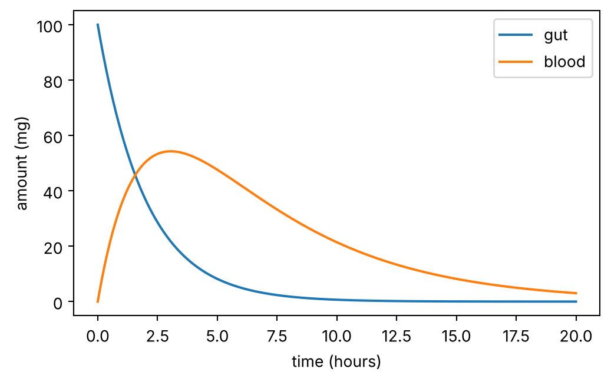
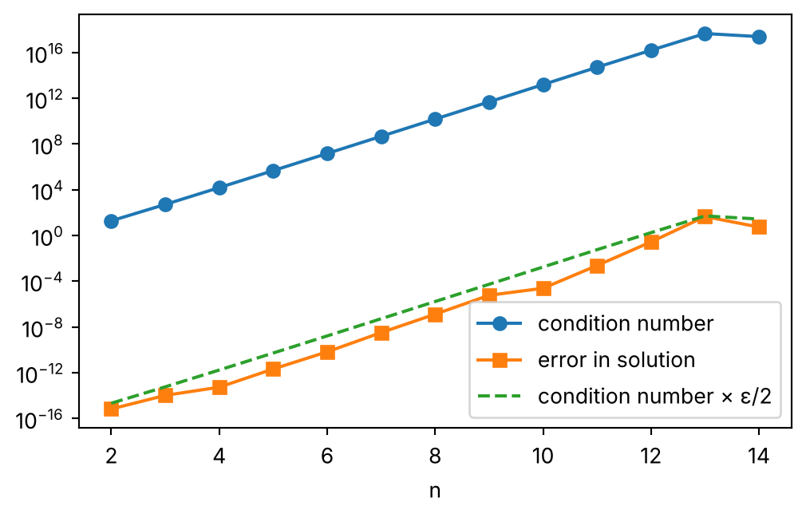

Solutions are grouped by chapter, with the solutions to each Part review after the last chapter of that Part. Try each exercise before reading its solution.
2.\(\M{P}\) is \(3 \times 4\), with \(p_{23} = -2\) and \(p_{32} = 6\), and \[\M{P}\T = \mat{4 & 3 & 0 \\ -1 & 5 & 6 \\ 0 & -2 & 8 \\ 2 & 1 & -3}.\]
3.\(\M{A}\) and \(\M{C}\) are symmetric. \(\M{B}\) is not: \(b_{12} = 3\) but \(b_{21} = -3\). (Each entry is the negative of its mirror image; such matrices are called skew-symmetric.) \(\M{D}\) is not square, so it can’t be symmetric.
4.\[
\M{D} = \mat{0 & 118 & 69 & 56 \\ 118 & 0 & 56 & 125 \\ 69 & 56 & 0 & 61 \\ 56 & 125 & 61 & 0}.
\] It is symmetric because the distance from city \(i\) to city \(j\) is the same as from \(j\) to \(i\). The main diagonal holds the distance from each city to itself, which is zero.
5. Ordering the people A to E, \[\M{F} = \mat{0 & 1 & 1 & 0 & 0 \\ 0 & 0 & 1 & 0 & 0 \\ 1 & 0 & 0 & 0 & 0 \\ 1 & 1 & 1 & 0 & 0 \\ 0 & 0 & 0 & 0 & 0}.\] It is not symmetric: A follows B (\(f_{12} = 1\)), but B does not follow A (\(f_{21} = 0\)). The sum of column \(j\) counts the people who follow person \(j\): A and B have 2 followers each, C has 3, and D and E have none.
3. The left side is \(\mat{a & b + c \\ b - c & a}\). Comparing entries, \(a = 3\), \(b + c = 5\) and \(b - c = 1\), so \(b = 3\) and \(c = 2\).
4. Suppose the baker makes \(s\) batches of cake and \(t\) of biscuits. The flour and sugar give \[
0.2s + 0.3t = 1.3,
\]\[
0.15s + 0.1t = 0.6.
\] Multiplying the second equation by 3 gives \(0.45s + 0.3t = 1.8\); subtracting the first leaves \(0.25s = 0.5\), so \(s = 2\) and then \(t = 3\). The butter needed is \(2 \times 0.15 + 3 \times 0.2 = 0.9\) kg. In vector form, \(2\vect{c} + 3\vect{b} = (1.3, 0.6, 0.9)\T\).
5. We need \(s + 3t = 7\) and \(2s - t = 0\). The second gives \(t = 2s\), so \(7s = 7\): \(s = 1\) and \(t = 2\). Check: \((1, 2)\T + 2(3, -1)\T = (7, 0)\T\). ✓
Every combination \(s(2, 4)\T + t(-1, -2)\T = (2s - t)(1, 2)\T\) is a multiple of \((1, 2)\T\), so it lies on the line \(y = 2x\). The point \((1, 3)\) is not on that line, so it can’t be reached. The two given vectors point along the same line, so combining them never leaves it.
import numpy as npT = np.array([[18.2, 19.1, 17.6], [19.5, 20.3, 18.4], [21.0, 21.8, 19.9], [22.4, 23.0, 21.2]])D = T - T.mean(axis=0) # the 1 x 3 row of means is broadcast down the rowsprint(D)print(D.sum(axis=0)) # zero, up to rounding
3.\(\M{A}^2 = \mat{1 & 2 \\ 0 & 1}\), \(\M{A}^3 = \mat{1 & 3 \\ 0 & 1}\), \(\M{A}^4 = \mat{1 & 4 \\ 0 & 1}\), suggesting \(\M{A}^n = \mat{1 & n \\ 0 & 1}\). If this holds for \(n\), then \[
\M{A}^{n+1} = \M{A}^n\M{A} = \mat{1 & n \\ 0 & 1}\mat{1 & 1 \\ 0 & 1} = \mat{1 & n + 1 \\ 0 & 1},
\] so it holds for \(n + 1\) too. Since it holds for \(n = 1\), it holds for every \(n\) (by induction). Geometrically, \(\M{A}\) is a shear, and \(n\) shears by 1 make a shear by \(n\).
4.\[
\M{A}\M{B} = \mat{a + c & b + d \\ c & d},
\]\[
\M{B}\M{A} = \mat{a & a + b \\ c & c + d}.
\] Comparing the \((1, 1)\) entries gives \(c = 0\), and then the \((1, 2)\) entries give \(d = a\). So the matrices that commute with \(\M{A}\) are \(\M{B} = \mat{a & b \\ 0 & a}\) for any \(a\) and \(b\).
5. If \(\M{A}\) is \(m \times n\), then \(\M{A}\T\M{A}\) is \((n \times m)(m \times n)\) and \(\M{A}\M{A}\T\) is \((m \times n)(n \times m)\), both defined. By the transpose rule, \[
(\M{A}\T\M{A})\T = \M{A}\T(\M{A}\T)\T = \M{A}\T\M{A},
\] so \(\M{A}\T\M{A}\) is symmetric, and the same argument works for \(\M{A}\M{A}\T\).
6. For example \(\M{A} = \mat{0 & 1 \\ 0 & 0}\): then \(\M{A}^2 = \M{0}\). Geometrically, \(\M{A}\) sends \(\uj\) to \(\ui\) and \(\ui\) to \(\zerovec\), so applying it twice sends everything to \(\zerovec\).
The \((1, 1)\) entry is 2: the routes are 1 → 2 → 3 → 1 and 1 → 3 → 2 → 1, round the triangle in each direction. A three-step route that returns to its start must go round a triangle of roads. Town 4 has only one road, to town 3, so it is not on any triangle, and the \((4, 4)\) entry is 0.
the line \(y = \sqrt{3}\,x\) is at \(\theta = 60°\), so \(2\theta = 120°\) and the matrix is \(\mat{-\tfrac{1}{2} & \tfrac{\sqrt{3}}{2} \\ \tfrac{\sqrt{3}}{2} & \tfrac{1}{2}}\).
2.
\(\ui \to (0, -1)\T\) and \(\uj \to (1, 0)\T\): a rotation by \(90°\) clockwise.
An enlargement with scale factor 3, centred at the origin.
A reflection, with \(\cos 2\theta = 0.6\) and \(\sin 2\theta = 0.8\). Then \(\tan\theta = \dfrac{\sin 2\theta}{1 + \cos 2\theta} = 0.5\), so the mirror line is \(y = \tfrac{1}{2}x\).
Projection onto the \(y\)-axis.
3. The corners go to \((0, 0)\), \((3, 1)\), \((4, 3)\) and \((1, 2)\): a parallelogram with sides \((3, 1)\T\) and \((1, 2)\T\). Its area is \(3 \times 2 - 1 \times 1 = 5\).
5. Using the angle subtraction formulas, \[
\mat{\cos 2\theta & \sin 2\theta \\ \sin 2\theta & -\cos 2\theta}\mat{\cos\theta \\ \sin\theta}
= \mat{\cos 2\theta\cos\theta + \sin 2\theta\sin\theta \\ \sin 2\theta\cos\theta - \cos 2\theta\sin\theta}
= \mat{\cos\theta \\ \sin\theta},
\]\[
\mat{\cos 2\theta & \sin 2\theta \\ \sin 2\theta & -\cos 2\theta}\mat{-\sin\theta \\ \cos\theta}
= \mat{\sin 2\theta\cos\theta - \cos 2\theta\sin\theta \\ -\sin 2\theta\sin\theta - \cos 2\theta\cos\theta}
= \mat{\sin\theta \\ -\cos\theta}.
\] So the matrix fixes the direction along the line at angle \(\theta\) and reverses the perpendicular direction. The reflection in that line does exactly the same to these two vectors. A linear transformation is fixed by what it does to two non-parallel vectors (as in Exercise 4), so the matrix is that reflection.
6. The midpoint of the segment from \(\vect{p}\) to \(\vect{q}\) is \(\tfrac{1}{2}(\vect{p} + \vect{q})\). By linearity, \(\M{A}\left(\tfrac{1}{2}(\vect{p} + \vect{q})\right) = \tfrac{1}{2}(\M{A}\vect{p} + \M{A}\vect{q})\), the midpoint of the image segment.
A rotation by \(90°\) combined with an enlargement by factor 3: \[3\mat{0 & -1 \\ 1 & 0} = \mat{0 & -3 \\ 3 & 0}.\]
A reflection in the \(y\)-axis: \[\mat{0 & -1 \\ 1 & 0}\mat{0 & 1 \\ 1 & 0} = \mat{-1 & 0 \\ 0 & 1}.\]
2.\[
\M{A}\M{B} = \mat{5 & 2 \\ 2 & 1},
\]\[
\M{B}\M{A} = \mat{1 & 2 \\ 2 & 5}.
\] Under \(\M{A}\M{B}\) the unit square goes to the parallelogram with corners \((0, 0)\), \((5, 2)\), \((7, 3)\), \((2, 1)\); under \(\M{B}\M{A}\) to the one with corners \((0, 0)\), \((1, 2)\), \((3, 7)\), \((2, 5)\). These are mirror images of each other in the line \(y = x\), and both have area 1, since both shears have determinant 1.
3. The first column of \(\M{R}(\theta)^2\) is \[(\cos^2\theta - \sin^2\theta,\; 2\sin\theta\cos\theta)\T,\] and that of \(\M{R}(2\theta)\) is \((\cos 2\theta, \sin 2\theta)\T\). So \[
\cos 2\theta = \cos^2\theta - \sin^2\theta,
\]\[
\sin 2\theta = 2\sin\theta\cos\theta.
\]
4. Writing \(c_\theta = \cos 2\theta\), \(s_\theta = \sin 2\theta\) and similarly for \(\varphi\), the reflection in the \(\varphi\) line comes first, so it goes on the right: \[
\mat{c_\theta & s_\theta \\ s_\theta & -c_\theta}\mat{c_\varphi & s_\varphi \\ s_\varphi & -c_\varphi}
= \mat{c_\theta c_\varphi + s_\theta s_\varphi & c_\theta s_\varphi - s_\theta c_\varphi \\ s_\theta c_\varphi - c_\theta s_\varphi & s_\theta s_\varphi + c_\theta c_\varphi}
= \mat{\cos 2(\theta - \varphi) & -\sin 2(\theta - \varphi) \\ \sin 2(\theta - \varphi) & \cos 2(\theta - \varphi)},
\] which is \(\M{R}(2(\theta - \varphi))\). When \(\theta = \varphi\) it is \(\M{R}(0) = \M{I}\): reflecting twice in the same line changes nothing.
5.\[
\mat{a & -b \\ b & a}\mat{c & -d \\ d & c} = \mat{ac - bd & -(ad + bc) \\ ad + bc & ac - bd}.
\] Swapping \((a, b)\) with \((c, d)\) gives the same result, so the matrices commute. Each is a rotation combined with an enlargement about the origin. Rotations about the same point commute, and enlargements commute with everything, so the combinations commute too. (This is the same calculation as multiplying the complex numbers \(a + bi\) and \(c + di\).)
6.\(\mat{0 & -2 \\ 2 & 0} = 2\M{R}(90°)\): a rotation by \(90°\), then an enlargement by 2. Since \(\sqrt{3^2 + (3\sqrt{3})^2} = 6\), the second matrix is \(6\mat{1/2 & -\sqrt{3}/2 \\ \sqrt{3}/2 & 1/2} = 6\M{R}(60°)\): a rotation by \(60°\), then an enlargement by 6.
Any matrix of the form \(\mat{a & b \\ b & a}\) commutes with \(\mat{2 & 1 \\ 1 & 2}\). (These matrices all have the same invariant lines, \(y = x\) and \(y = -x\), which Chapter 19 explains.)
5. Subtracting column 1 from columns 2 and 3 doesn’t change the determinant: \[
\begin{vmatrix} 1 & 0 & 0 \\ x & y - x & z - x \\ x^2 & y^2 - x^2 & z^2 - x^2 \end{vmatrix}
= (y - x)(z^2 - x^2) - (z - x)(y^2 - x^2).
\] Taking out the common factor \((y - x)(z - x)\) leaves \((z + x) - (y + x) = z - y\). The matrix is singular exactly when two of \(x\), \(y\) and \(z\) are equal.
6.\[\det(\M{Q}\T\M{Q}) = \det(\M{Q}\T)\det\M{Q} = (\det\M{Q})^2,\] and \(\det\M{I} = 1\), so \(\det\M{Q} = \pm 1\). The transformation preserves areas (or volumes): it is a rotation if \(\det\M{Q} = 1\), or includes a reflection if \(\det\M{Q} = -1\).
7. Place the parallelogram with corners \(\zerovec\), \((a, c)\), \((a + b, c + d)\) and \((b, d)\) inside the rectangle \([0, a + b] \times [0, c + d]\). The region outside the parallelogram is two triangles with legs \(a\) and \(c\) (total area \(ac\)), two triangles with legs \(b\) and \(d\) (total area \(bd\)), and two rectangles of size \(b \times c\) (total \(2bc\)). So the area is \[
(a + b)(c + d) - ac - bd - 2bc = ad - bc.
\]
import numpy as nprng = np.random.default_rng(0)for n in [2, 5, 10, 20, 50]: dets = [abs(np.linalg.det(rng.uniform(-1, 1, (n, n)))) for _ inrange(200)]print(f"n = {n:2d}: median |det| = {np.median(dets):.3g}")
n = 2: median |det| = 0.288
n = 5: median |det| = 0.304
n = 10: median |det| = 2.12
n = 20: median |det| = 5.69e+03
n = 50: median |det| = 2.73e+19
forn= [25102050]d=zeros(200,1);fork=1:200d(k) =abs(det(2*rand(n) -1));endfprintf('n = %2d: median |det| = %.3g\n',n,median(d));end
The typical size grows enormously with \(n\), from about 0.3 to about \(10^{19}\), although the matrices are no closer to or further from being singular. A determinant multiplies together \(n\) scale factors, so it depends on the size of the entries and on \(n\), not just on how close the matrix is to singular. The condition number (Chapter 24) measures nearness to singularity properly.
3. Expanding along the first row, \[\det\M{A} = 2(1 - 0) - 0 + 1(3 - 0) = 5.\] The cofactor matrix and its transpose, the adjugate, are \[
\mat{1 & -1 & 3 \\ 3 & 2 & -6 \\ -1 & 1 & 2}, \qquad
\operatorname{adj}\M{A} = \mat{1 & 3 & -1 \\ -1 & 2 & 1 \\ 3 & -6 & 2},
\] so \(\M{A}^{-1} = \frac{1}{5}\mat{1 & 3 & -1 \\ -1 & 2 & 1 \\ 3 & -6 & 2}\). Check: row 1 of \(\M{A}\) times column 1 of the adjugate is \(2 + 0 + 3 = 5\), and row 1 times column 2 is \(6 + 0 - 6 = 0\). ✓
4.\[(\M{A}\M{B})(\M{B}^{-1}\M{A}^{-1}) = \M{A}(\M{B}\M{B}^{-1})\M{A}^{-1} = \M{A}\M{A}^{-1} = \M{I},\] and for square matrices that is enough. Applying the rule twice, \((\M{A}\M{B}\M{C})^{-1} = \M{C}^{-1}\M{B}^{-1}\M{A}^{-1}\).
5. Rearranging, \(\M{A}(3\M{I} - \M{A}) = 3\M{A} - \M{A}^2 = 2\M{I}\), so \(\M{A} \cdot \tfrac{1}{2}(3\M{I} - \M{A}) = \M{I}\). Hence \(\M{A}\) is invertible with \(\M{A}^{-1} = \tfrac{1}{2}(3\M{I} - \M{A})\).
6.
Multiply on the right by \(\M{A}^{-1}\): \(\M{X} = \M{B}\M{A}^{-1}\).
import numpy as npK = np.array([[3, 3], [2, 5]])Kinv = np.array([[15, 17], [20, 9]])P = np.array([[7, 11], [4, 15]]) # HELP: one pair per columnC = (K @ P) %26print(C) # (7, 8), (0, 19): HIATprint((K @ Kinv) %26) # the identity, modulo 26print((Kinv @ C) %26) # back to HELP
[[ 7 0]
[ 8 19]]
[[1 0]
[0 1]]
[[ 7 11]
[ 4 15]]
K= [33;25];Kinv= [1517;209];P= [711;415];% HELP: one pair per columnC=mod(K*P,26) % (7, 8), (0, 19): HIATmod(K*Kinv,26) % the identity, modulo 26mod(Kinv*C,26) % back to HELP
3. Reflection in \(y = z\) swaps the \(y\)- and \(z\)-coordinates: \(\mat{1 & 0 & 0 \\ 0 & 0 & 1 \\ 0 & 1 & 0}\). Expanding along the first row, its determinant is \(1 \cdot (0 - 1) = -1\), and swapping twice gives back the original, so its square is \(\M{I}\).
4.\(\M{P} = \mat{1 & 0 & 0 \\ 0 & 0 & 0 \\ 0 & 0 & 1}\) and \(\M{R}_y(90°) = \mat{0 & 0 & 1 \\ 0 & 1 & 0 \\ -1 & 0 & 0}\). Both products are \[
\mat{0 & 0 & 1 \\ 0 & 0 & 0 \\ -1 & 0 & 0}.
\] A rotation about the \(y\)-axis keeps the \(xz\)-plane in place (it turns the plane within itself), and it does not change \(y\)-coordinates. So it makes no difference whether you flatten onto the \(xz\)-plane first and then turn the plane, or turn first and then flatten.
5. Expanding along the bottom row, the determinant is \(1 \times \det\mat{1 & 0 \\ 0 & 1} = 1\). The shear adds \(k\) times the height \(z\) to \(x\), and leaves the height alone, so to undo it, subtract \(k\) times the height: the inverse is \(\mat{1 & 0 & -k \\ 0 & 1 & 0 \\ 0 & 0 & 1}\). Multiplying the two gives \(\M{I}\).
\(b = 1\), \(a - d = 0\), \(c = 1\), so \(m^2 - 1 = 0\) and \(m = \pm 1\). The line \(y = x\) is invariant with \(\lambda = a + bm = 3\), since \((1, 1)\T \to (3, 3)\T\). The line \(y = -x\) has \(\lambda = 2 - 1 = 1\): it is a line of invariant points, since \((1, -1)\T \to (1, -1)\T\). The \(y\)-axis is not invariant, since \(b \neq 0\).
\(b = 0\), \(a - d = 0\), \(c = 3\), so Equation 9.3 becomes \(-3 = 0\), which has no solutions: no line \(y = mx\) is invariant. But \(b = 0\), so the \(y\)-axis is invariant, with \(\lambda = d = 1\): \((0, 1)\T \to (0, 1)\T\), so it is a line of invariant points. This matrix is a shear parallel to the \(y\)-axis, with \(y\) increasing by \(3x\).
\(b = -1\), \(a - d = 0\), \(c = 1\), so \(-m^2 - 1 = 0\), which has no real solutions, and since \(b \neq 0\) the \(y\)-axis is not invariant either. There are no invariant lines: this is a rotation by \(90°\), which turns every line through the origin.
2.Invariant points.\(\M{B} - \M{I} = \mat{2 & -2 \\ 1 & -1}\), so \((\M{B} - \M{I})\vect{x} = \zerovec\) gives \(2x - 2y = 0\) and \(x - y = 0\), both saying \(y = x\). The line \(y = x\) is a line of invariant points.
Invariant lines.\(b = -2\), \(a - d = 3\), \(c = 1\), so Equation 9.3 is \[
-2m^2 + 3m - 1 = 0 \quad\Longrightarrow\quad (2m - 1)(m - 1) = 0.
\] For \(m = 1\), \(\lambda = 3 - 2 = 1\): the line of invariant points found above. For \(m = \tfrac{1}{2}\), \(\lambda = 3 - 1 = 2\): the line \(y = \tfrac{1}{2}x\) is invariant, with every point moved twice as far from the origin. Check: \(\M{B}(2, 1)\T = (4, 2)\T = 2(2, 1)\T\). The \(y\)-axis is not invariant, since \(b \neq 0\).
3.\((1, 0)\T \to (2, 0)\T\) and \((0, 1)\T \to (0, 3)\T\), so the \(x\)-axis is invariant with \(\lambda = 2\) and the \(y\)-axis with \(\lambda = 3\). (With Equation 9.3: \(b = 0\), so the equation is \(-m = 0\), giving \(m = 0\); and \(b = 0\) makes the \(y\)-axis invariant.) For invariant points, \(\mat{2 & 0 \\ 0 & 3} - \M{I} = \mat{1 & 0 \\ 0 & 2}\) has determinant \(2 \neq 0\), so the only solution of \((\M{A} - \M{I})\vect{x} = \zerovec\) is the origin.
4. Here \(a = d = \cos\theta\), \(b = -\sin\theta\) and \(c = \sin\theta\), so Equation 9.3 is \[
-\sin\theta\, m^2 - \sin\theta = 0, \quad\text{that is}\quad \sin\theta\,(m^2 + 1) = 0.
\] Since \(m^2 + 1\) is never 0, this needs \(\sin\theta = 0\). The \(y\)-axis is invariant only when \(b = -\sin\theta = 0\) too. So there are no invariant lines unless \(\sin\theta = 0\), that is, \(\theta = 0°\) or \(180°\).
For \(\theta = 0°\) the matrix is \(\M{I}\): nothing moves, and every line is a line of invariant points. For \(\theta = 180°\) the matrix is \(-\M{I}\): every line through the origin is invariant with \(\lambda = -1\), each point flipping to the opposite side of the origin, and only the origin itself is fixed.
5. The image of \((x, y, z)\) is \((x + kz, y, z)\). This equals \((x, y, z)\) when \(kz = 0\), that is \(z = 0\). The \(xy\)-plane is a plane of invariant points.
6. Multiplying out gives \(\M{Q}\T\M{Q} = \tfrac{1}{9}\mat{9 & 0 & 0 \\ 0 & 9 & 0 \\ 0 & 0 & 9} = \M{I}\), and \(\det\M{Q} = 1\). The axis satisfies \((\M{Q} - \M{I})\vect{x} = \zerovec\), that is \[
-x - y + 2z = 0,
\]\[
2x - y - z = 0,
\]\[
-x + 2y - z = 0,
\] which give \(x = y = z\). The axis is the line through \((1, 1, 1)\). (The trace is \(2 = 1 + 2\cos\alpha\), so the rotation angle is \(60°\).)
The invariant lines are \(y = -x\) with \(\lambda = -1\) and \(y = \tfrac{3}{2}x\) with \(\lambda = 4\). By hand, \(b = 2\), \(a - d = -1\), \(c = 3\), so Equation 9.3 is \(2m^2 - m - 3 = 0\), that is \((2m - 3)(m + 1) = 0\), giving the same slopes. The stretch factors are \(a + bm = 1 + 2 \times (-1) = -1\) and \(1 + 2 \times \tfrac{3}{2} = 4\).
On \(y = -x\), the stretch factor \(-1\) means each point flips to the opposite side of the origin, at the same distance: \((1, -1)\T \to (-1, 1)\T\). The line lands on itself, but only the origin stays put.
\(\M{B}\) sends \(\ui\) to \((0, -1)\) and \(\uj\) to \((1, 0)\): it is a rotation through \(90^\circ\) clockwise about the origin.
\[\M{A}\M{B} = \mat{-1 & 2 \\ -3 & 1}, \qquad \M{B}\M{A} = \mat{1 & 3 \\ -2 & -1}.\] They are not equal: rotating then applying \(\M{A}\) is different from applying \(\M{A}\) then rotating.
\(\det\M{A} = 6 - 1 = 5\) and \(\det\M{B} = 0 + 1 = 1\), while \(\det(\M{A}\M{B}) = -1 + 6 = 5 = 5 \times 1\). (\(\det(\M{B}\M{A})\) is also 5, even though \(\M{B}\M{A} \neq \M{A}\M{B}\).)
2.Uses Chapter 4 and Chapter 5. The reflection is \(\M{Y} = \mat{-1 & 0 \\ 0 & 1}\) and the rotation is \(\M{R} = \mat{0 & -1 \\ 1 & 0}\). The reflection happens first, so it goes on the right: \[\M{R}\M{Y} = \mat{0 & -1 \\ -1 & 0}.\] This sends \(\ui\) to \(-\uj\) and \(\uj\) to \(-\ui\), and leaves \((1, -1)\) where it is: it is a reflection in the line \(y = -x\). In the other order, \[\M{Y}\M{R} = \mat{0 & 1 \\ 1 & 0},\] which is a reflection in \(y = x\).
3.Uses Chapter 6. The parallelogram is spanned by \(\vect{OP} = (3, 1)\) and \(\vect{OR} = (1, 2)\), so its area is \[\left|\det\mat{3 & 1 \\ 1 & 2}\right| = 6 - 1 = 5.\]\(\det\M{M} = 2 + 1 = 3\), so the image has area \(3 \times 5 = 15\). The determinant is positive, so the orientation is kept: going round \(O, P, Q, R\) and round their images is in the same direction.
4.Uses Chapter 2, Chapter 3 and Chapter 7. Subtract \(\M{I}\) from both sides: \(\M{A}\M{X} = \M{C} - \M{I} = \mat{3 & 1 \\ 8 & 3}\). \(\det\M{A} = 6 - 5 = 1\), so \(\M{A}^{-1} = \mat{3 & -1 \\ -5 & 2}\). Multiply both sides on the left by \(\M{A}^{-1}\): \[\M{X} = \M{A}^{-1}(\M{C} - \M{I}) = \mat{3 & -1 \\ -5 & 2}\mat{3 & 1 \\ 8 & 3} = \mat{1 & 0 \\ 1 & 1}.\] Check: \(\M{A}\M{X} = \mat{3 & 1 \\ 8 & 3}\). In \(\M{A}\M{X}\), \(\M{A}\) is on the left of \(\M{X}\), so \(\M{A}^{-1}\) has to go on the left to cancel it. Matrix multiplication is not commutative, and \((\M{C} - \M{I})\M{A}^{-1} = \mat{4 & -1 \\ 9 & -2}\) is a different matrix.
5.Uses Chapter 6 and Chapter 8. Expanding along the first row, \[\det\M{M} = 1(0 - k) - 2(0 - 2) + k(0 - 2) = 4 - 3k,\] so \(\M{M}\) is singular when \(k = 4/3\). Then the volume scale factor is 0: the unit cube is flattened onto a plane through the origin (here a plane, because the first two rows, and so two of the columns, are not parallel). Different points end up in the same place, so the transformation cannot be undone.
6.Uses Chapter 9. For the line \(y = mx\), the point \((x, mx)\) goes to \((3x + mx, 2mx)\). This is on \(y = mx\) when \(2mx = m(3 + m)x\), that is \(m^2 + m = 0\), so \(m = 0\) or \(m = -1\). The \(y\)-axis is not invariant, since \((0, 1)\) goes to \((1, 2)\). So the invariant lines through the origin are \(y = 0\) and \(y = -x\).
Points on \(y = 0\) are moved to three times as far from the origin, since \((x, 0) \mapsto (3x, 0)\), and points on \(y = -x\) twice as far, since \((x, -x) \mapsto (2x, -2x)\). So neither is a line of invariant points: only the origin stays put.
7.Uses Chapter 8 and Chapter 5. The rotation about \(z\) comes first, so it goes on the right: \[
\M{R} = \M{R}_x\M{R}_z = \mat{1 & 0 & 0 \\ 0 & 0 & -1 \\ 0 & 1 & 0}\mat{0 & -1 & 0 \\ 1 & 0 & 0 \\ 0 & 0 & 1} = \mat{0 & -1 & 0 \\ 0 & 0 & -1 \\ 1 & 0 & 0}.
\] Then \(\M{R}(1, -1, 1)\T = (1, -1, 1)\T\), so every point on the line through the origin and \((1, -1, 1)\) stays put, and that line is the axis. The trace is \(0 + 0 + 0 = 0 = 1 + 2\cos\alpha\), so \(\cos\alpha = -\tfrac{1}{2}\) and the angle is \(120^\circ\). Two quarter turns about different axes make a third of a turn about a new axis.
8.Uses Chapter 1 and Chapter 3.\[
\M{A}\T\M{A} = \mat{2 & 2 \\ 2 & 5}, \qquad
\M{A}\M{A}\T = \mat{5 & 2 & 1 \\ 2 & 1 & 0 \\ 1 & 0 & 1}.
\]\(\M{A}\T\M{A}\) is \(2 \times 2\) and \(\M{A}\M{A}\T\) is \(3 \times 3\). For any \(\M{A}\), \((\M{A}\T\M{A})\T = \M{A}\T(\M{A}\T)\T = \M{A}\T\M{A}\), using \((\M{P}\M{Q})\T = \M{Q}\T\M{P}\T\), so \(\M{A}\T\M{A}\) equals its own transpose. The same argument works for \(\M{A}\M{A}\T\).
\(\M{A}\M{B}\) applies \(\M{B}\) first and then \(\M{A}\). To undo this, undo the last step first: apply \(\M{A}^{-1}\), then \(\M{B}^{-1}\), which is the matrix \(\M{B}^{-1}\M{A}^{-1}\). It’s like taking off shoes and socks: the shoes, which went on last, come off first.
From the second equation, \(y = 3x - 5\). Substituting into the first, \(x + 6x - 10 = 4\), so \(x = 2\) and \(y = 1\). The lines cross once, at \((2, 1)\).
The second equation is \(-\tfrac{1}{2}\) times the first, so both describe the same line, \(x - 2y = 3\). There are infinitely many solutions: \(x = 3 + 2t\), \(y = t\) for any \(t\).
Doubling the first equation gives \(2x - 2y = 2\), which contradicts \(2x - 2y = 5\). The lines are parallel (both have slope 1) and there is no solution.
3. The system is \(x\mat{1 \\ 3} + y\mat{2 \\ -1} = \mat{4 \\ 5}\), and indeed \(2\mat{1 \\ 3} + 1\mat{2 \\ -1} = \mat{4 \\ 5}\).
4. The coefficient matrix has determinant \(6 - 3k\), which is zero only when \(k = 2\).
For \(k \neq 2\) there is exactly one solution, whatever \(c\) is.
(b), (c) For \(k = 2\) the equations are \(x + 2y = 2\) and \(3x + 6y = c\). Three times the first is \(3x + 6y = 6\). So if \(c = 6\) the two equations describe the same line and there are infinitely many solutions; if \(c \neq 6\) they are parallel lines and there is no solution.
Part (b) shows that every vector \(\vect{p} + \vect{h}\) is a solution. Part (c) shows that every solution \(\vect{q}\) is of this form, with \(\vect{h} = \vect{q} - \vect{p}\). Together they say that the solutions are exactly the vectors \(\vect{p} + \vect{h}\).
One solution: three planes meeting at a single point, like the floor and two walls in the corner of a room.
A line of solutions: three different planes through one line, like pages of a book; or two equations describing the same plane, with the third plane crossing it.
A plane of solutions: all three equations describe the same plane.
No solution: two parallel planes (the third can be anything); three parallel planes; two equations describing the same plane, with the third parallel to it; or a triangular tube, where each pair of planes meets in a line but the three lines are parallel.
The first alloy needs 37.5 kg of alloy 1, 37.5 kg of alloy 2 and 25 kg of alloy 3. The second “needs” \(-12.5\) kg of alloy 2, which is impossible: the workshop can’t add a negative amount. The equations have a solution, but it has no physical meaning, so this alloy can’t be made from these three scraps. In the column picture, \(\vect{b}\) can be made from the columns, but not with amounts that are all positive.
The last row says \(0 = 1\), so there is no solution. Geometrically, each pair of planes meets in a line, but the three lines are parallel, so no point lies on all three planes. (The third plane’s normal is the sum of the other two, which is why the lines are parallel.)
3. The same steps now end with the row \(\amat{ccc|c}{0 & 0 & 0 & 0}\), which places no restriction. The remaining rows say \(y + 2z = 3\) and \(x + y + z = 2\). Taking \(z\) as a free parameter,
\[
y = 3 - 2z,
\]\[
x = 2 - y - z = -1 + z,
\]
so the solutions are \(\vect{x} = \mat{-1 + z \\ 3 - 2z \\ z}\) for any number \(z\). They form a line: all three planes meet along it.
4. The first pivot is \(a_{11} = 0\), and the function divides by it, so it stops with an error. The system itself is fine: swapping the rows gives
\[
\amat{rr|r}{1 & 1 & 2 \\ 0 & 1 & 1},
\]
so \(y = 1\) and \(x = 1\). Row swaps like this are the subject of Chapter 25.
5. The pivots were \(2\), \(\tfrac{1}{2}\) and \(-1\), and no rows were swapped, so \(\det\M{A} = 2 \times \tfrac{1}{2} \times (-1) = -1\). (Adding multiples of rows doesn’t change the determinant, and the final matrix is triangular.) By cofactor expansion along the first row, \[
\det\M{A} = 2\begin{vmatrix} -1 & 2 \\ 1 & 2 \end{vmatrix} - 1\begin{vmatrix} -3 & 2 \\ -2 & 2 \end{vmatrix} + (-1)\begin{vmatrix} -3 & -1 \\ -2 & 1 \end{vmatrix} = 2(-4) - (-2) - (-5) = -1. \;✓
\]
For the \(3 \times 3\) matrix, \(R_2 \leftarrow R_2 - 2R_1\) gives row 2 as \((0, 1, -1)\) on the left, and then \(R_3 \leftarrow R_3 - R_2\) makes the left part of row 3 all zeros. Column 3 has no pivot, so the left half can never become \(\M{I}\), and the matrix has no inverse. (Its rank is 2, and its determinant is 0.)
If \(a \neq 0\), there are three pivots: exactly one solution.
If \(a = 0\) and \(b \neq 3\), the last row says \(0 = b - 3 \neq 0\): no solution.
If \(a = 0\) and \(b = 3\), the last row is all zeros: rank 2, with one free variable, so infinitely many solutions.
6. With \(m\) equations and \(n > m\) unknowns, there is at most one pivot per row, so the rank is at most \(m\), and there are at least \(n - m \ge 1\) free variables. A homogeneous system is always consistent, so we can set one free variable to 1 (and any others to 0), and solve for the pivot variables. That gives a solution with a non-zero entry.
7. The balances are: carbon, \(a = 6c\); hydrogen, \(2b = 12c\); oxygen, \(2a + b = 6c + 2d\). As a homogeneous system in \(a, b, c, d\):
The free variable is \(d\), and the rows say \(a = d\), \(b = d\) and \(c = d/6\). The smallest whole numbers come from \(d = 6\): \[
6\,\mathrm{CO_2} + 6\,\mathrm{H_2O} \longrightarrow \mathrm{C_6H_{12}O_6} + 6\,\mathrm{O_2}.
\]
3. A general product of this shape is \[
\mat{1 & 0 \\ \ell & 1}\mat{u_{11} & u_{12} \\ 0 & u_{22}} = \mat{u_{11} & u_{12} \\ \ell u_{11} & \ell u_{12} + u_{22}}.
\] For this to equal \(\mat{0 & 1 \\ 1 & 1}\), the top-left entries need \(u_{11} = 0\), but then the bottom-left entry is \(\ell u_{11} = 0\), not 1. So there is no such factorisation. Swapping the rows, with \(\M{P} = \mat{0 & 1 \\ 1 & 0}\), gives \(\M{P}\M{A} = \mat{1 & 1 \\ 0 & 1}\), which is already upper triangular: \(\M{L} = \M{I}\) and \(\M{U} = \mat{1 & 1 \\ 0 & 1}\).
4. No rows were swapped, so \(\det\M{A} = \det\M{L}\,\det\M{U} = 1 \times (1 \times 1 \times 1) = 1\). \(\M{L}\) is triangular, so its determinant is the product of its diagonal entries, which are all 1.
One factorisation, about \(5.3 \times 10^9\) operations, plus 50 pairs of triangular solves, about \(50 \times 2 \times 2000^2 = 4 \times 10^8\). The total is about \(5.7 \times 10^9\), so (b) is roughly 47 times faster.
6. Let \(\M{L}\) and \(\M{M}\) be lower triangular, so \(\ell_{ik} = 0\) when \(k > i\) and \(m_{kj} = 0\) when \(k < j\). The \((i, j)\) entry of \(\M{L}\M{M}\) is \(\sum_k \ell_{ik} m_{kj}\). If \(i < j\), every term has either \(k > i\) (so \(\ell_{ik} = 0\)) or \(k \le i < j\) (so \(m_{kj} = 0\)). So every entry above the diagonal is zero, and \(\M{L}\M{M}\) is lower triangular.
import numpy as npdef forward_substitution(L, b):"""Solve Ly = b, for L lower triangular with 1s on its diagonal.""" n =len(b) y = np.zeros(n)for i inrange(n): y[i] = b[i] - L[i, :i] @ y[:i]return ydef back_substitution(U, y):"""Solve Ux = y, for U upper triangular.""" n =len(y) x = np.zeros(n)for i inrange(n -1, -1, -1): x[i] = (y[i] - U[i, i +1:] @ x[i +1:]) / U[i, i]return xL = np.array([[1, 0, 0], [2, 1, 0], [3, 2, 1]])U = np.array([[1, 1, 1], [0, 1, 2], [0, 0, 1]])A = L @ Ufor b in ([3, 9, 16], [0, 1, 3]): x = back_substitution(U, forward_substitution(L, b))print(x, np.allclose(x, np.linalg.solve(A, b)))
[1. 1. 1.] True
[ 0. -1. 1.] True
L= [100;210;321];U= [111;012;001];A=L*U;b= [3;9;16];x=U\forward_substitution(L,b)norm(x-A\b) % zero: the answers agreefunctiony=forward_substitution(L,b)% Solve Ly = b, for L lower triangular with 1s on its diagonal.n=length(b);y=zeros(n,1);fori=1:ny(i) =b(i) -L(i,1:i-1) *y(1:i-1);endend
If \(a \neq 4\), there are three pivots, and exactly one solution. The three planes meet at a single point.
If \(a = 4\) and \(b \neq 3\), the last row says \(0 = b - 3 \neq 0\), so there is no solution. No two of the planes are parallel (their normals \((1, 1, 1)\), \((1, 2, 3)\) and \((2, 3, 4)\) are not multiples of each other), so they meet in pairs along three parallel lines, like the sides of a triangular tent.
If \(a = 4\) and \(b = 3\), the last row is all zeros, and \[\amat{rrr|r}{1 & 0 & -1 & 0 \\ 0 & 1 & 2 & 1 \\ 0 & 0 & 0 & 0}.\]\(z\) is free: \(x = t\), \(y = 1 - 2t\), \(z = t\). The three planes share a common line.
3.Uses Chapter 12, Chapter 7 and Chapter 6. Row reduce \([\,\M{A} \mid \M{I}\,]\): \(R_3 - R_1\), then \(R_3 + 2R_2\), then \(R_3 \div 3\), then \(R_2 - R_3\), then \(R_1 - 2R_2\), which gives \[
\M{A}^{-1} = \frac{1}{3}\mat{1 & -2 & 2 \\ 1 & 1 & -1 \\ -1 & 2 & 1}.
\] Expanding along the first row, \(\det\M{A} = 1(1 - 0) - 2(0 - 1) + 0 = 3\), which matches the \(\tfrac{1}{3}\) in front (the inverse is the adjugate divided by the determinant). Multiplying out, \(\M{A}\M{A}^{-1} = \M{I}\). Then \[\vect{x} = \M{A}^{-1}\mat{1 \\ 1 \\ 1} = \frac{1}{3}\mat{1 \\ 1 \\ 2}.\]
5.Uses Chapter 12 and Chapter 10.\(\vect{a}_3 = \vect{a}_1 + \vect{a}_2\), and \(\vect{a}_1\) and \(\vect{a}_2\) are not parallel, so the rank is 2. The columns span a plane: every combination \(x\vect{a}_1 + y\vect{a}_2 = (x, x + y, y)\) has its middle entry equal to the sum of the other two.
\((1, 0, 1)\) fails this test (\(1 + 1 \neq 0\)), so it is not a combination of the columns. Elimination on the augmented matrix gives a row \((0, 0, 0 \mid c)\) with \(c \neq 0\), so the augmented matrix has rank 3, more than the rank of \(\M{A}\).
\((1, 3, 2)\) passes (\(1 + 2 = 3\)): it is \(\vect{a}_1 + 2\vect{a}_2\). The augmented matrix also has rank 2, so the system is consistent, with one free variable since the rank is less than 3.
6.Uses Chapter 10 and Chapter 12. Counting atoms of carbon, hydrogen and oxygen on each side: \[
3a = c, \qquad 8a = 2d, \qquad 2b = 2c + d.
\] This is the homogeneous system \[
\mat{3 & 0 & -1 & 0 \\ 8 & 0 & 0 & -2 \\ 0 & 2 & -2 & -1}\mat{a \\ b \\ c \\ d} = \zerovec,
\] whose matrix has rank 3, so there is one free variable. Taking \(a = 1\) gives \(c = 3\), \(d = 4\) and \(b = (6 + 4)/2 = 5\): \[\mathrm{C_3H_8} + 5\,\mathrm{O_2} \to 3\,\mathrm{CO_2} + 4\,\mathrm{H_2O}.\]
7.Uses Chapter 13. The factorisation costs about \(\tfrac{2}{3}n^3\) operations, so multiplying \(n\) by 4 multiplies the time by \(4^3 = 64\): about \(64 \times 0.2 = 12.8\) seconds. With the factors kept, each extra right-hand side needs only forward and back substitution, about \(2n^2\) operations, which is \(3/n\) of the factorisation: about \(12.8 \times 3/4000 \approx 0.01\) seconds each, or roughly half a second for all 50. Starting again each time would take \(50 \times 12.8 = 640\) seconds, over ten minutes.
import numpy as npimport scipy.linalg as slA = np.array([[2.0, 1, 1], [4, 3, 3], [8, 7, 9]])f = sl.lu_factor(A) # factorise onceprint(sl.lu_solve(f, [4, 10, 24]))# Solving for e1, e2 and e3 gives the columns of the inverseA_inv = np.column_stack([sl.lu_solve(f, e) for e in np.eye(3)])print(np.round(A_inv, 4))print("Agrees with inv(A):", np.allclose(A_inv, np.linalg.inv(A)))
The line through the origin in the direction \((1, 2)\T\).
All of \(\R^2\): the two vectors don’t lie along the same line (\(\det\mat{1 & 3 \\ 2 & 1} = -5 \neq 0\)).
The \(xy\)-plane in \(\R^3\).
The line through the origin in the direction \((1, 1, 1)\T\): the second vector is twice the first.
2. Yes. Solving \(c_1(1, 1, 1)\T + c_2(1, 2, 3)\T = (3, 4, 5)\T\): the first two entries give \(c_1 + c_2 = 3\) and \(c_1 + 2c_2 = 4\), so \(c_2 = 1\) and \(c_1 = 2\), and the third entry checks: \(2 + 3 = 5\). So \((3, 4, 5)\T = 2(1, 1, 1)\T + (1, 2, 3)\T\).
3.
Dependent. Row reduction of the matrix with these columns leaves no pivot in column 3, and gives the relation \((1, 2, 3)\T - 2(4, 5, 6)\T + (7, 8, 9)\T = \zerovec\).
Independent: the matrix with these columns has determinant \(1(4 - 1) - 0 + 1(0 - 2) = 1 \neq 0\).
4. Two vectors in \(\R^2\) are dependent exactly when the matrix they form has determinant zero: \(4 - k^2 = 0\), so \(k = 2\) or \(k = -2\). (For \(k = 2\), \((2, 4)\T = 2(1, 2)\T\).)
5.
Suppose \(c_1\vect{v}_1 + c_2\vect{v}_2 = \zerovec\). Then \(c_1\vect{v}_1 + c_2\vect{v}_2 + 0\vect{v}_3 = \zerovec\), and independence of all three forces \(c_1 = c_2 = 0\).
Suppose \(a(\vect{u} + \vect{v}) + b(\vect{u} - \vect{v}) = \zerovec\). Rearranging, \((a + b)\vect{u} + (a - b)\vect{v} = \zerovec\), so by independence \(a + b = 0\) and \(a - b = 0\), which give \(a = b = 0\).
6.\(\zerovec\) satisfies \(0 + 0 + 0 = 0\). If \(\vect{p}\) and \(\vect{q}\) have entries adding to 0, so do \(\vect{p} + \vect{q}\) (the sums add) and \(k\vect{p}\) (the sum is multiplied by \(k\)). So the plane is a subspace. The plane \(x + y + z = 1\) is not: it doesn’t contain \(\zerovec\).
import numpy as npfrom scipy.linalg import null_spaceV = np.column_stack([[1, 2, 0], [0, 1, 1], [1, 0, 1], [2, 3, 2]])print(np.linalg.matrix_rank(V)) # 3 < 4: dependentc = null_space(V)print(c.ravel() / c[0, 0]) # scaled so that c1 = 1print(np.linalg.matrix_rank(V[:, :3])) # 3: the first three are independent
3
[ 1. 1. 1. -1.]
3
V= [1012;2103;0112];rank(V) % 3 < 4: dependentc=null(V);c=c/c(1) % scaled so that c1 = 1rank(V(:,1:3)) % 3: the first three are independent
ans =
3
c =
1.0000
1.0000
1.0000
-1.0000
ans =
3
Four vectors in \(\R^3\) must be dependent. The relation is \(\vect{v}_1 + \vect{v}_2 + \vect{v}_3 - \vect{v}_4 = \zerovec\): the fourth vector is the sum of the other three. The first three have rank 3, so they are independent.
Not a basis: \((2, 4)\T = 2(1, 2)\T\), so the vectors are dependent.
A basis of \(\R^2\): the determinant is \(4 - 6 = -2 \neq 0\).
Not a basis of \(\R^3\): two vectors can’t span a space of dimension 3. (They are a basis for the \(xy\)-plane.)
A basis of \(\R^3\): the determinant is 2 (Chapter 14, Example 3).
2. Solve \(c_1 + c_2 = 4\) and \(2c_1 + 3c_2 = 7\). Subtracting twice the first from the second gives \(c_2 = -1\), so \(c_1 = 5\): \([\vect{v}]_B = (5, -1)\T\). Check: \(5(1, 2)\T - (1, 3)\T = (4, 7)\T\). ✓
3. The third vector is the sum of the first two, and the first two are not parallel. So \((1, -1, 0)\T\) and \((0, 1, -1)\T\) form a basis, and the dimension is 2. (The span is the plane \(x + y + z = 0\), the subject of Exercise 4.)
4. The equation gives \(x = -y - z\), with \(y\) and \(z\) free, so every point of the plane is \(y(-1, 1, 0)\T + z(-1, 0, 1)\T\). These two vectors are independent, so they form a basis, and the dimension is 2.
5. Take \(\vect{b}_1 = (1, 1)\T\) along the line and \(\vect{b}_2 = (-1, 1)\T\) at right angles to it. The projection keeps \(\vect{b}_1\) and sends \(\vect{b}_2\) to \(\zerovec\), so in this basis its matrix is \(\M{B} = \mat{1 & 0 \\ 0 & 0}\). With \(\M{P} = \mat{1 & -1 \\ 1 & 1}\) and \(\M{P}^{-1} = \tfrac{1}{2}\mat{1 & 1 \\ -1 & 1}\), \[
\M{A} = \M{P}\M{B}\M{P}^{-1} = \mat{1 & 0 \\ 1 & 0} \cdot \frac{1}{2}\mat{1 & 1 \\ -1 & 1} = \frac{1}{2}\mat{1 & 1 \\ 1 & 1}.
\] Check: \(\M{A}(1, 1)\T = (1, 1)\T\) and \(\M{A}(-1, 1)\T = \zerovec\). ✓
6.\(\M{B}^2 = (\M{P}^{-1}\M{A}\M{P})(\M{P}^{-1}\M{A}\M{P}) = \M{P}^{-1}\M{A}(\M{P}\M{P}^{-1})\M{A}\M{P} = \M{P}^{-1}\M{A}^2\M{P}\). Geometrically: doing the transformation twice is the same transformation whichever coordinates you describe it in, so its matrix in the new basis is the new matrix squared.
The result is exactly \(\M{C}\). In the basis \(\vect{p}, \vect{q}, \vect{u}\), the rotation is the simple \(\M{R}_z(120°)\); the change of basis carries it over to the usual coordinates.
1. Row 2 is twice row 1, so the echelon form is \(\mat{1 & 2 & 3 \\ 0 & 0 & 0}\), with rank 1. The column space has basis \((1, 2)\T\). With \(x_2 = s\) and \(x_3 = t\) free, \(x_1 = -2s - 3t\), so the null space has basis \((-2, 1, 0)\T\) and \((-3, 0, 1)\T\). Rank–nullity: \(1 + 2 = 3\), the number of columns. ✓
2. Row 3 is row 1 plus row 2, and the reduced form is \(\mat{1 & 0 & 2 \\ 0 & 1 & 1 \\ 0 & 0 & 0}\), with rank 2.
Column space: \((1, 0, 1)\T\) and \((0, 1, 1)\T\), the pivot columns.
Null space: with \(x_3 = t\), \(x_1 = -2t\) and \(x_2 = -t\), so the basis is \((-2, -1, 1)\T\).
Row space: \((1, 0, 2)\) and \((0, 1, 1)\).
Left null space: row 1 plus row 2 minus row 3 is zero, so the basis is \((1, 1, -1)\T\).
The null space is at right angles to the row space: \((1, 0, 2) \cdot (-2, -1, 1) = 0\) and \((0, 1, 1) \cdot (-2, -1, 1) = 0\). ✓
3. One equation in three unknowns: \(x_1 = 6 - 2x_2 - 3x_3\), with \(x_2 = s\) and \(x_3 = t\) free. So \[
\vect{x} = \mat{6 \\ 0 \\ 0} + s\mat{-2 \\ 1 \\ 0} + t\mat{-3 \\ 0 \\ 1}.
\] The solutions form a plane in \(\R^3\), parallel to the null space, which is the plane \(x_1 + 2x_2 + 3x_3 = 0\) through the origin.
4. Independent columns means rank 4. So the column space has dimension 4 (inside \(\R^6\)), the null space dimension \(4 - 4 = 0\), the row space dimension 4 (all of \(\R^4\)) and the left null space dimension \(6 - 4 = 2\). Since the null space is \(\{\zerovec\}\), \(\M{A}\vect{x} = \vect{b}\) has at most one solution: exactly one if \(\vect{b}\) is in the column space, and none otherwise.
5. If every \(\vect{b}\) in \(\R^m\) can be reached, the column space is all of \(\R^m\), which has dimension \(m\). The dimension of the column space is the rank, so \(\operatorname{rank}\M{A} = m\). The rank is also at most the number of columns, so \(m \le n\).
6. If \(\M{A}\vect{x} = \zerovec\) then \(\M{A}\T\M{A}\vect{x} = \M{A}\T\zerovec = \zerovec\). Conversely, if \(\M{A}\T\M{A}\vect{x} = \zerovec\), then \[
0 = \vect{x}\T\M{A}\T\M{A}\vect{x} = (\M{A}\vect{x})\T(\M{A}\vect{x}) = \lVert\M{A}\vect{x}\rVert^2,
\] and a vector of length zero is \(\zerovec\), so \(\M{A}\vect{x} = \zerovec\). So the two null spaces are the same.
rank 3
column space 3 null space 5 row space 3 left null space 2
largest row . null vector: 2.8600491427041542e-15
A=randn(5,3) *randn(3,8);r=rank(A)dims= [size(orth(A),2),size(null(A),2),size(orth(A'),2),size(null(A'),2)]max(abs(A*null(A)), [],'all') % tiny: rows are perpendicular to the null space
r =
3
dims =
3 5 3 2
ans =
8.0939e-16
The dimensions are \(r = 3\), \(n - r = 5\), \(r = 3\) and \(m - r = 2\), as the table predicts, and every row dotted with every null space vector gives zero, up to rounding error of about \(10^{-15}\).
\((1, 2, 2) \cdot (2, 1, -2) = 2 + 2 - 4 = 0\), so the angle is \(90°\).
The dot product is 1 and both lengths are \(\sqrt{2}\), so \(\cos\theta = \tfrac{1}{2}\) and \(\theta = 60°\).
2.\(\vect{a} \cdot \vect{b} = 9\) and \(\vect{a} \cdot \vect{a} = 3\), so \(\vect{p} = 3\vect{a} = (3, 3, 3)\T\). The error is \(\vect{e} = (-1, 0, 1)\T\), and \(\vect{e} \cdot \vect{a} = -1 + 0 + 1 = 0\). ✓
3. With \(\M{A} = \mat{1 & 0 \\ 1 & 1 \\ 1 & 2}\) and \(\vect{y} = (6, 0, 0)\T\), the normal equations are \[
\mat{3 & 3 \\ 3 & 5}\mat{c \\ m} = \mat{6 \\ 0}.
\] Subtracting the first from the second gives \(2m = -6\), so \(m = -3\) and \(c = 5\): the line is \(y = 5 - 3t\). The errors are \(6 - 5 = 1\), \(0 - 2 = -2\) and \(0 - (-1) = 1\), so the sum of squared errors is \(1 + 4 + 1 = 6\).
4.\(\M{A}\T\M{A}\) is symmetric, so its inverse is too, and \[
\M{P}\T = (\M{A}\T)\T\big((\M{A}\T\M{A})^{-1}\big)\T\M{A}\T = \M{A}(\M{A}\T\M{A})^{-1}\M{A}\T = \M{P}.
\] And \[
\M{P}^2 = \M{A}(\M{A}\T\M{A})^{-1}(\M{A}\T\M{A})(\M{A}\T\M{A})^{-1}\M{A}\T = \M{A}(\M{A}\T\M{A})^{-1}\M{A}\T = \M{P}.
\] Geometrically, \(\M{P}\vect{b}\) is already in the column space, and projecting a vector that is already in the subspace leaves it where it is.
6. The normal equations say \(\M{A}\T\vect{e} = \zerovec\), where \(\vect{e} = \vect{y} - \M{A}\hat{\vect{x}}\). The first column of \(\M{A}\) is all 1s, so the first row of \(\M{A}\T\) is all 1s, and the first entry of \(\M{A}\T\vect{e}\) is \(e_1 + e_2 + \dots + e_k = 0\).
The fit is \(h \approx 2.02 + 14.02t - 4.93t^2\). Comparing with \(h_0 + ut - \tfrac{1}{2}gt^2\) gives \(\tfrac{1}{2}g \approx 4.93\), so \(g \approx 9.86\) m/s², close to the true value of about 9.81.
1.Uses Chapter 14 and Chapter 6. They are dependent: \[(1, -1, -1) = (2, 1, 0) - (1, 2, 1).\] The first two are not parallel, so all three span a plane through the origin. Its normal is \((2, 1, 0) \times (1, 2, 1) = (1, -2, 3)\), so the plane is \(x - 2y + 3z = 0\). The matrix with these columns has determinant 0, because its columns are dependent: it flattens space onto this plane.
2.Uses Chapter 15 and Chapter 9. Solve \(c_1(1, 1) + c_2(1, -1) = (5, 1)\): \(c_1 + c_2 = 5\) and \(c_1 - c_2 = 1\), so the coordinates are \((3, 2)\). With \(\M{P} = \mat{1 & 1 \\ 1 & -1}\), \[\M{P}^{-1}\M{S}\M{P} = \mat{1 & 0 \\ 0 & -1}.\]\(\M{S}\) is the reflection in \(y = x\). The first basis vector lies along the mirror line, so it stays put, and the second is perpendicular to it, so it is reversed. In a basis made of invariant directions, the matrix is diagonal.
3.Uses Chapter 16 and Chapter 12. The reduced row echelon form is \(\mat{1 & 2 & 0 \\ 0 & 0 & 1}\), so the rank is 2, with pivots in columns 1 and 3.
Column space: the pivot columns \((1, 2)\) and \((1, 3)\) of \(\M{A}\), which span all of \(\R^2\).
Row space: \((1, 2, 0)\) and \((0, 0, 1)\), the nonzero rows of the reduced form.
Null space: \(x_2\) is free, with \(x_1 = -2x_2\) and \(x_3 = 0\), so the basis is \((-2, 1, 0)\).
Left null space: only \(\zerovec\), since the column space is all of \(\R^2\).
Rank–nullity: \(2 + 1 = 3\), the number of columns, and \(2 + 0 = 2\), the number of rows. \(\M{A}\vect{x} = \vect{b}\) is solvable for every \(\vect{b}\), because the column space is all of \(\R^2\), but the solution is never unique: any multiple of \((-2, 1, 0)\) can be added to it.
4.Uses Chapter 17. With \[
\M{X} = \mat{1 & 0 \\ 1 & 1 \\ 1 & 2 \\ 1 & 3}, \qquad \vect{y} = \mat{1 \\ 3 \\ 4 \\ 4},
\] the normal equations \(\M{X}\T\M{X}\vect{c} = \M{X}\T\vect{y}\) are \[\mat{4 & 6 \\ 6 & 14}\mat{c_0 \\ c_1} = \mat{12 \\ 23},\] with solution \(c_0 = 1.5\), \(c_1 = 1\): the line is \(y = 1.5 + x\). The fitted values are \(1.5, 2.5, 3.5, 4.5\), so the residuals are \(-0.5, 0.5, 0.5, -0.5\). They add up to zero (orthogonal to the column of 1s), and \(0(-0.5) + 1(0.5) + 2(0.5) + 3(-0.5) = 0\) (orthogonal to the column of \(x\) values).
5.Uses Chapter 17. With \(\M{A}\) having columns \((1, 0, 1)\) and \((0, 1, 1)\), \[\M{A}\T\M{A} = \mat{2 & 1 \\ 1 & 2}, \qquad \M{A}\T\vect{b} = \mat{1 \\ 2},\] so \(\hat{\vect{x}} = (0, 1)\) and the projection is \(\vect{p} = \M{A}\hat{\vect{x}} = (0, 1, 1)\). The error \(\vect{e} = \vect{b} - \vect{p} = (1, 1, -1)\) is orthogonal to both columns, and the distance is \(\lVert\vect{e}\rVert = \sqrt{3}\). (Check: the plane’s normal is \((-1, -1, 1)\), and \(\lvert\vect{b} \cdot \vect{n}\rvert / \lVert\vect{n}\rVert = 3/\sqrt{3} = \sqrt{3}\).)
6.Uses Chapter 15, Chapter 7 and Chapter 9.\(\M{A}(1, 1) = (5, 5)\) and \(\M{A}(1, -2) = (2, -4)\), so \(\M{A}\M{P} = \M{P}\mat{5 & 0 \\ 0 & 2}\), and \[\M{P}^{-1}\M{A}\M{P} = \mat{5 & 0 \\ 0 & 2}.\] The lines through \((1, 1)\) and \((1, -2)\) are invariant lines of \(\M{A}\): it stretches the first by a factor of 5 and the second by a factor of 2. In Part IV these directions are called eigenvectors.
The null space has dimension \(7 - 4 = 3\), the column space and row space have dimension 4, and the left null space has dimension \(5 - 4 = 1\).
No. The column space is a 4-dimensional subspace of \(\R^5\), so some \(\vect{b}\) are out of reach: exactly those with a nonzero component along the left null space.
Three, one for each dimension of the null space.
No. Seven vectors in \(\R^5\) are always dependent; equivalently, the null space is not just \(\zerovec\).
1. The trace is 7 and the determinant is \(10 - 4 = 6\), so \(\lambda^2 - 7\lambda + 6 = 0\), giving \(\lambda = 6\) or \(1\). For \(\lambda = 6\), \(\M{A} - 6\M{I} = \mat{-1 & 2 \\ 2 & -4}\), so \(\vect{v} = (2, 1)\T\). For \(\lambda = 1\), \(\M{A} - \M{I} = \mat{4 & 2 \\ 2 & 1}\), so \(\vect{v} = (1, -2)\T\). Check: \(6 + 1 = 7\) is the trace and \(6 \times 1 = 6\) is the determinant. ✓
2. The matrix is triangular, so the eigenvalues are the diagonal entries: 2, \(-1\) and 3. For \(\lambda = 2\), the first column of \(\M{A} - 2\M{I}\) is zero, so \(\vect{v} = (1, 0, 0)\T\) works: \(\M{A}\vect{v}\) is the first column of \(\M{A}\), which is \((2, 0, 0)\T = 2\vect{v}\).
3. The matrix splits into a \(2 \times 2\) block \(\mat{1 & 2 \\ 2 & 1}\), with trace 2 and determinant \(-3\), so eigenvalues 3 and \(-1\), and the single entry 3. So the eigenvalues are 3 (twice) and \(-1\).
For \(\lambda = 3\), \(\M{A} - 3\M{I} = \mat{-2 & 2 & 0 \\ 2 & -2 & 0 \\ 0 & 0 & 0}\), which says only \(x = y\), so the eigenspace is the plane spanned by \((1, 1, 0)\T\) and \((0, 0, 1)\T\), of dimension 2. For \(\lambda = -1\), the eigenspace is the line through \((1, -1, 0)\T\). The repeated eigenvalue has two independent eigenvectors, so the matrix is not defective.
4. (a) \((\M{A} + c\M{I})\vect{v} = \M{A}\vect{v} + c\vect{v} = \lambda\vect{v} + c\vect{v} = (\lambda + c)\vect{v}\).
(b) Multiply \(\M{A}\vect{v} = \lambda\vect{v}\) on the left by \(\M{A}^{-1}\): \(\vect{v} = \lambda\M{A}^{-1}\vect{v}\). Since \(\M{A}\) is invertible, \(\lambda \neq 0\) (otherwise \(\M{A}\vect{v} = \zerovec\) with \(\vect{v} \neq \zerovec\)), so dividing by \(\lambda\) gives \(\M{A}^{-1}\vect{v} = \tfrac{1}{\lambda}\vect{v}\).
5. The trace is 0 and the determinant is 4, so \(\lambda^2 + 4 = 0\) and \(\lambda = \pm 2i\). The matrix is \(2\mat{0 & -1 \\ 1 & 0}\): a rotation by \(90°\) followed by scaling by 2. No direction is left on its own line, which is why there are no real eigenvalues.
6. The discriminant of \(\lambda^2 - (a + d)\lambda + (ad - bc) = 0\) is \[
(a + d)^2 - 4(ad - bc) = (a - d)^2 + 4bc.
\] If \(b\) and \(c\) have the same sign, \(bc > 0\), so the discriminant is positive and both eigenvalues are real (and different).
The eigenvalues are \(2 - \sqrt{2} \approx 0.586\), \(2\) and \(2 + \sqrt{2} \approx 3.414\), with eigenvectors proportional to \((1, \sqrt{2}, 1)\), \((-1, 0, 1)\) and \((1, -\sqrt{2}, 1)\) (software may flip their signs).
Lowest frequency: all three masses move the same way together, the middle one furthest.
Middle frequency: the outer masses move in opposite directions and the middle one stays still.
Highest frequency: the outer masses move together and the middle one moves the opposite way, by more.
The more the neighbouring masses move against each other, the more the springs between them stretch, and the higher the frequency.
1. The trace is 2 and the determinant \(-3\), so \(\lambda = 3\) or \(-1\), with eigenvectors \((1, 1)\T\) and \((1, -1)\T\). So \[
\M{P} = \mat{1 & 1 \\ 1 & -1},
\qquad
\M{D} = \mat{3 & 0 \\ 0 & -1},
\qquad
\M{P}^{-1} = \frac{1}{2}\mat{1 & 1 \\ 1 & -1}.
\] Then \[
\M{A}^{10} = \M{P}\mat{3^{10} & 0 \\ 0 & 1}\M{P}^{-1} = \frac{1}{2}\mat{3^{10} + 1 & 3^{10} - 1 \\ 3^{10} - 1 & 3^{10} + 1} = \mat{29525 & 29524 \\ 29524 & 29525}.
\]
2. With \(\vect{x}_k\) holding the shares of brands 1 and 2, each column of \(\M{M}\) says where one brand’s customers go: \[
\M{M} = \mat{0.7 & 0.4 \\ 0.3 & 0.6}.
\] The columns add to 1, so 1 is an eigenvalue, and the other is the trace minus 1, which is \(0.3\). For \(\lambda = 1\), \(\M{M} - \M{I} = \mat{-0.3 & 0.4 \\ 0.3 & -0.4}\), giving the eigenvector \((4, 3)\T\). Scaled to add to 1, the long-run shares are \(\tfrac{4}{7} \approx 57\%\) for brand 1 and \(\tfrac{3}{7} \approx 43\%\) for brand 2. The distance from the steady state is multiplied by \(0.3\) each month, so it is approached quickly: after 4 months, less than 1% of the starting difference is left.
3. The only eigenvalue is 2 (twice), and \(\M{A} - 2\M{I} = \mat{0 & 1 \\ 0 & 0}\) has rank 1, so its null space, the eigenspace, is the line through \((1, 0)\T\). There aren’t two independent eigenvectors to make an invertible \(\M{P}\), so the matrix can’t be diagonalised.
4. Using \(\det(\M{X}\M{Y}) = \det\M{X}\det\M{Y}\) and \(\det\M{P}^{-1} = 1/\det\M{P}\) (Chapter 6), \[
\det\M{A} = \det\M{P}\,\det\M{D}\,\det\M{P}^{-1} = \det\M{D} = \lambda_1\lambda_2\cdots\lambda_n,
\] since the determinant of a diagonal matrix is the product of its diagonal entries.
5. As in Example 3, the vector \((L_{k+1}, L_k)\T\) is multiplied by \(\mat{1 & 1 \\ 1 & 0}\) at each step, so by Equation 19.3 it is a combination of \(\lambda_1^k\) and \(\lambda_2^k\) times the eigenvectors. Its second entry is therefore \(L_k = a\lambda_1^k + b\lambda_2^k\) for some numbers \(a\) and \(b\). The starting values give \[
a + b = L_0 = 2,
\qquad
a\lambda_1 + b\lambda_2 = L_1 = 1.
\] Since \(\lambda_1 + \lambda_2 = 1\) (the trace), \(a = b = 1\) satisfies both, and the two equations have only one solution because \(\lambda_1 \neq \lambda_2\). So \(L_k = \lambda_1^k + \lambda_2^k\).
6.\(\M{A} = \M{P}\M{D}\M{P}^{-1}\) with \(\M{D} = \mat{1 & 0 \\ 0 & -1}\), so \(\M{A}^2 = \M{P}\M{D}^2\M{P}^{-1} = \M{P}\M{I}\M{P}^{-1} = \M{I}\). A reflection in a line is an example: vectors along the mirror line have eigenvalue 1, vectors perpendicular to it have eigenvalue \(-1\), and reflecting twice puts everything back.
lam =
1.1280
v =
0.5371
0.2857
0.1773
ans =
0.5371
0.2857
0.1773
The dominant eigenvalue is about \(1.128\), so in the long run the population grows by about 12.8% a year. The other two eigenvalues are complex, with absolute value about \(0.61\), so their modes die away. In the long run about 53.7% of the animals are young, 28.6% adult and 17.7% old, and 50 steps from a starting population of young animals only has already reached this distribution.
1. The trace is 0 and the determinant \(-25\), so \(\lambda = \pm 5\). For \(\lambda = 5\), \(\M{A} - 5\M{I} = \mat{-2 & 4 \\ 4 & -8}\), giving \((2, 1)\T\); for \(\lambda = -5\), the eigenvector is \((1, -2)\T\), perpendicular to the first. Normalising, \[
\M{Q} = \frac{1}{\sqrt{5}}\mat{2 & 1 \\ 1 & -2},
\qquad
\M{\Lambda} = \mat{5 & 0 \\ 0 & -5}.
\]
2.
The matrix is \(\mat{2 & 1 \\ 1 & 2}\), with eigenvalues 3 and 1: positive definite.
The matrix is \(\mat{1 & 3 \\ 3 & 1}\), with eigenvalues 4 and \(-2\): indefinite. For example, \((1, -1)\) gives \(1 - 6 + 1 = -4\).
The matrix is \(\mat{1 & -2 \\ -2 & 4}\), with eigenvalues 5 and 0: positive semidefinite. In fact \(x^2 - 4xy + 4y^2 = (x - 2y)^2\), which is zero along the line \(x = 2y\).
3. A symmetric \(2 \times 2\) matrix is positive definite when its top-left entry and its determinant are both positive. Here \(2 > 0\), and \(16 - k^2 > 0\) when \(-4 < k < 4\).
5.\((\M{A}\T\M{A})\T = \M{A}\T(\M{A}\T)\T = \M{A}\T\M{A}\), so it is symmetric. For any \(\vect{x}\), \[
\vect{x}\T\M{A}\T\M{A}\vect{x} = (\M{A}\vect{x})\T(\M{A}\vect{x}) = \lVert\M{A}\vect{x}\rVert^2 \ge 0,
\] so it is positive semidefinite. This is zero only when \(\M{A}\vect{x} = \zerovec\). If the columns of \(\M{A}\) are independent, that happens only for \(\vect{x} = \zerovec\), so the matrix is positive definite.
6. The characteristic equation is \(\lambda^2 - (a + c)\lambda + (ac - b^2) = 0\), with discriminant \[
(a + c)^2 - 4(ac - b^2) = a^2 - 2ac + c^2 + 4b^2 = (a - c)^2 + 4b^2 \ge 0,
\] so the eigenvalues are real. They are equal only when \(a = c\) and \(b = 0\), when the matrix is a multiple of \(\M{I}\).
import numpy as npsigma = np.array([[80, 20, 0], [20, 40, -10], [0, -10, -30]])values, Q = np.linalg.eigh(sigma)print(values) # principal stresses, smallest firstprint(Q[:, 2]) # direction of the largestprint(np.round(Q.T @ Q, 10)) # the identity, so Q is orthogonal
sigma= [80200;2040-10;0-10-30];[Q,D] =eig(sigma);diag(D) % principal stresses, smallest firstQ(:,3) % direction of the largestQ'*Q% the identity, so Q is orthogonal
ans =
-31.4731
33.0635
88.4095
ans =
-0.9213
-0.3874
0.0327
ans =
1.0000 0.0000 0
0.0000 1.0000 0.0000
0 0.0000 1.0000
The principal stresses are about \(88.4\) MPa (tension), \(33.1\) MPa (tension) and \(-31.5\) MPa (compression). The largest acts along \(\pm(0.921, 0.387, -0.033)\), mostly along the \(x\) axis, tilted towards \(y\). \(\M{Q}\T\M{Q} = \M{I}\), up to rounding, confirms that the principal directions are perpendicular.
1.\(\M{A}\T\M{A} = \mat{1 & 1 \\ 1 & 1}\), with eigenvalues 2 and 0, so the singular values are \(\sqrt{2}\) and 0. The matrix sends \((x, y)\) to \((x + y, 0)\): it flattens the unit circle onto the segment of the \(x\) axis from \(-\sqrt{2}\) to \(\sqrt{2}\), reached from the direction \(\tfrac{1}{\sqrt{2}}(1, 1)\). The zero singular value shows the rank is 1.
2. The matrix stretches by 2 along \(x\) and by 3 along \(y\) (with a flip), so \(\sigma_1 = 3\) and \(\sigma_2 = 2\), in decreasing order. Take \(\vect{v}_1 = (0, 1)\T\); then \(\vect{u}_1 = \M{A}\vect{v}_1/3 = (0, -1)\T\). Take \(\vect{v}_2 = (1, 0)\T\); then \(\vect{u}_2 = \M{A}\vect{v}_2/2 = (1, 0)\T\). So \[
\mat{2 & 0 \\ 0 & -3} = \mat{0 & 1 \\ -1 & 0}\mat{3 & 0 \\ 0 & 2}\mat{0 & 1 \\ 1 & 0}.
\] The minus sign belongs in \(\M{U}\), because singular values are never negative.
3. Transposing \(\M{A} = \M{U}\M{\Sigma}\M{V}\T\) gives \(\M{A}\T = \M{V}\M{\Sigma}\T\M{U}\T\). This is an SVD of \(\M{A}\T\): \(\M{V}\) and \(\M{U}\) are orthogonal, and \(\M{\Sigma}\T\) has the same singular values down its diagonal.
4. The original needs \(500 \times 800 = 400\,000\) numbers. The rank-40 approximation needs \(40(500 + 800 + 1) = 52\,040\), which is about 13% of the original.
5. An orthogonal matrix \(\M{Q}\) has determinant \(\pm 1\), since \((\det\M{Q})^2 = \det(\M{Q}\T\M{Q}) = \det\M{I} = 1\). So \[
\lvert\det\M{A}\rvert = \lvert\det\M{U}\rvert\,\lvert\det\M{\Sigma}\rvert\,\lvert\det\M{V}\T\rvert = \det\M{\Sigma} = \sigma_1\sigma_2\cdots\sigma_n.
\]
6.\(\M{A}\T\M{A} = \mat{2 & 2 \\ 2 & 2}\) has eigenvalues 4 and 0, so \(\sigma_1 = 2\), with \(\vect{v}_1 = \tfrac{1}{\sqrt{2}}(1, 1)\T\) and \(\vect{u}_1 = \M{A}\vect{v}_1/2 = \tfrac{1}{\sqrt{2}}(1, 1)\T\). Only the non-zero singular value is inverted, so \[
\M{A}^+ = \frac{1}{\sigma_1}\vect{v}_1\vect{u}_1\T = \frac{1}{2} \cdot \frac{1}{2}\mat{1 & 1 \\ 1 & 1} = \frac{1}{4}\mat{1 & 1 \\ 1 & 1}.
\] Then \(\hat{\vect{x}} = \M{A}^+(1, 3)\T = (1, 1)\T\). Every vector with \(x_1 + x_2 = 2\) is a least-squares solution (each gives \(\M{A}\vect{x} = (2, 2)\T\), the projection of \(\vect{b}\)), and \((1, 1)\) is the one closest to the origin.
7.
import numpy as nprng = np.random.default_rng(1)h = rng.normal(170, 10, 200) # heights in cms = h + rng.normal(0, 4, 200) # arm spans in cmX = np.column_stack([h, s])Xc = X - X.mean(axis=0)U, sv, Vt = np.linalg.svd(Xc, full_matrices=False)print(Vt) # rows are the principal componentsprint(sv**2/ np.sum(sv**2)) # fraction of variance explained
In MATLAB, the same steps are X = [h, s]; Xc = X - mean(X); [~, S, V] = svd(Xc, 'econ'); diag(S).^2 / sum(diag(S).^2). MATLAB’s random numbers differ from NumPy’s, so the results differ slightly.
The first principal component is about \(\pm(0.67, 0.74)\) and explains about 97% of the variance: it is overall body size, with height and arm span increasing together. The second, perpendicular to it, explains the remaining 3%; it measures how much longer or shorter a person’s arm span is than you would expect from their height. One number per person, the score along the first component, captures almost all the information in the two measurements.
4.\(\nabla f = (2x + y - 3, \; x + 2y)\T = \zerovec\) gives \(x = -2y\), then \(-4y + y = 3\), so \(y = -1\) and \(x = 2\). The Hessian is \(\mat{2 & 1 \\ 1 & 2}\) at every point, with eigenvalues 3 and 1, so \((2, -1)\) is a minimum, where \(f = 4 - 2 + 1 - 6 = -3\). Since the Hessian is positive definite everywhere, it is the global minimum.
5. With \((x, y) = \vect{g}(u, v) = (u + v, \; uv)\), \[
\M{J}_{\vect{g}} = \mat{1 & 1 \\ v & u},
\qquad
\M{J}_f = \mat{2x & -1} = \mat{2(u + v) & -1},
\] so \[
\M{J}_h = \M{J}_f\M{J}_{\vect{g}} = \mat{2(u + v) - v & 2(u + v) - u} = \mat{2u + v & u + 2v}.
\] Substituting first, \(h = (u + v)^2 - uv = u^2 + uv + v^2\), whose partial derivatives are \(2u + v\) and \(u + 2v\). ✓
6. The first term has gradient \(2\M{A}\T\M{A}\vect{x} - 2\M{A}\T\vect{b}\) (as in the chapter), and \(\mu\vect{x}\T\vect{x}\) has gradient \(2\mu\vect{x}\). Setting the sum to zero gives \((\M{A}\T\M{A} + \mu\M{I})\vect{x} = \M{A}\T\vect{b}\). For any \(\vect{x} \neq \zerovec\), \[
\vect{x}\T(\M{A}\T\M{A} + \mu\M{I})\vect{x} = \lVert\M{A}\vect{x}\rVert^2 + \mu\lVert\vect{x}\rVert^2 > 0,
\] so the matrix is positive definite, hence invertible, whatever the columns of \(\M{A}\). Adding \(\mu\M{I}\) raises every eigenvalue of \(\M{A}\T\M{A}\) by \(\mu\), lifting the zero ones away from zero.
import numpy as npA = np.diag([10.0, 1.0])for alpha in [0.1, 0.18, 0.21]: x = np.array([1.0, 1.0]) k =0while np.linalg.norm(x) >=1e-6and k <1000: x = x - alpha * (A @ x) k +=1print(f"alpha = {alpha:.2f}: {k} steps, |x| = {np.linalg.norm(x):.3g}")
The eigenvalues of \(\M{A}\) are 10 and 1, and each step multiplies the two components of \(\vect{x}\) by \(1 - 10\alpha\) and \(1 - \alpha\).
\(\alpha = 0.1\): the factors are 0 and \(0.9\). The first component vanishes at once, but the second shrinks slowly, and \(0.9^k < 10^{-6}\) needs \(k = 132\).
\(\alpha = 0.18\): the factors are \(-0.8\) and \(0.82\), both well inside \((-1, 1)\), so about 70 steps. This is close to the best possible, \(\alpha = 2/(10 + 1) \approx 0.182\), which makes both factors \(\pm 9/11\).
\(\alpha = 0.21\): the factor \(1 - 2.1 = -1.1\) has size greater than 1, so the first component flips sign and grows at every step, and the method diverges.
Convergence needs \(\alpha < 2/\lambda_{\max} = 0.2\), and even the best step leaves a factor of \((\kappa - 1)/(\kappa + 1)\) per step, where \(\kappa = 10\) is the condition number.
E.26 Linear ODE systems and the matrix exponential
1. With \(x_1 = x\), \(x_2 = \dot{x}\): \(\dot{x}_1 = x_2\) and \(\dot{x}_2 = -2x_1 - 3x_2\), so \(\M{A} = \mat{0 & 1 \\ -2 & -3}\). The trace is \(-3\) and the determinant 2, so \(\lambda^2 + 3\lambda + 2 = 0\) and \(\lambda = -1, -2\). Both are real and negative: a stable node. The mass returns to rest without oscillating (it is overdamped).
2. The eigenvalues are 3 and \(-1\), with eigenvectors \((1, 1)\T\) and \((1, -1)\T\), and \((1, 0)\T = \tfrac{1}{2}(1, 1)\T + \tfrac{1}{2}(1, -1)\T\). So \[
\vect{x}(t) = \tfrac{1}{2}e^{3t}\mat{1 \\ 1} + \tfrac{1}{2}e^{-t}\mat{1 \\ -1}.
\] The second mode dies away and the first grows, so \(\vect{x}(t)\) grows without limit along the direction \((1, 1)\). The equilibrium is a saddle.
3.
\(\tau = 0\), \(\Delta = 4\): a centre, with \(\lambda = \pm 2i\). This is the undamped spring \(\ddot{x} + 4x = 0\).
\(\tau = 2\), \(\Delta = -3 + 8 = 5\), and \(\tau^2 - 4\Delta = -16 < 0\): an unstable spiral, with \(\lambda = 1 \pm 2i\).
\(\tau = -6\), \(\Delta = 8\), and \(\tau^2 - 4\Delta = 4 > 0\): a stable node, with \(\lambda = -2\) and \(-4\).
\(\Delta = -2 < 0\): a saddle, with \(\lambda = 2\) and \(-1\).
4. (a) \(\M{D}^k = \mat{a^k & 0 \\ 0 & b^k}\), so the series is \[
\mat{1 + at + \tfrac{(at)^2}{2!} + \cdots & 0 \\ 0 & 1 + bt + \tfrac{(bt)^2}{2!} + \cdots} = \mat{e^{at} & 0 \\ 0 & e^{bt}}.
\] (b) \(\M{N}^2 = \M{0}\), so every term after \(\M{N}t\) vanishes and \(e^{\M{N}t} = \M{I} + \M{N}t = \mat{1 & t \\ 0 & 1}\). Then \[
\vect{x}(t) = \mat{1 & t \\ 0 & 1}\mat{x_1(0) \\ x_2(0)} = \mat{x_1(0) + x_2(0)t \\ x_2(0)}.
\] This is \(\ddot{x} = 0\) written as a system: an object moving at constant velocity \(x_2\), with no force on it. The factor \(t\) is the polynomial growth that defective matrices bring.
5. As a system, \(\M{A} = \mat{0 & 1 \\ -4 & -c}\), with characteristic equation \(\lambda^2 + c\lambda + 4 = 0\). The eigenvalues are complex, so the mass oscillates, when \(c^2 - 16 < 0\), that is \(0 \le c < 4\) (for \(c = 0\) it oscillates for ever). At \(c = 4\), \(\lambda = -2\) is repeated: critical damping, where the mass returns to rest as fast as possible without overshooting. Car suspensions and door closers are designed to be close to this.
6. Let \(\vect{q}_1, \dots, \vect{q}_n\) be orthonormal eigenvectors, with eigenvalues \(\lambda_i < 0\), and write \(\vect{x}_0 = c_1\vect{q}_1 + \dots + c_n\vect{q}_n\). Then \(\vect{x}(t) = \sum c_ie^{\lambda_i t}\vect{q}_i\), and because the \(\vect{q}_i\) are orthonormal, \[
\lVert\vect{x}(t)\rVert^2 = c_1^2e^{2\lambda_1 t} + \dots + c_n^2e^{2\lambda_n t}.
\] Every term decreases and tends to 0 as \(t\) grows, since every \(\lambda_i < 0\). (For a matrix that is not symmetric, \(\lVert\vect{x}\rVert\) can grow for a while before decaying, even when all the eigenvalues are negative.)
import numpy as npimport matplotlib.pyplot as pltfrom scipy.linalg import expmA = np.array([[-0.5, 0], [0.5, -0.2]])t = np.linspace(0, 20, 2001)X = np.array([expm(A * tk) @ [100, 0] for tk in t])j = np.argmax(X[:, 1])print(t[j], X[j, 1]) # time and amount of the peakplt.figure(figsize=(6, 3.5))plt.plot(t, X[:, 0], label="gut")plt.plot(t, X[:, 1], label="blood")plt.xlabel("time (hours)")plt.ylabel("amount (mg)")plt.legend()plt.show()
3.0500000000000003 54.28830203487782

A= [-0.50;0.5-0.2];t=linspace(0,20,2001);X=zeros(2,numel(t));forj=1:numel(t)X(:,j) =expm(A*t(j)) * [100;0];end[peak,j] =max(X(2,:));[t(j),peak] % time and amount of the peakplot(t,X)xlabel('time (hours)'),ylabel('amount (mg)'),legend('gut','blood')
ans =
3.0500 54.2883
The matrix is triangular, so the eigenvalues are \(-0.5\) and \(-0.2\). Solving directly, \(x_1 = 100e^{-0.5t}\), and \[
x_2(t) = \frac{100 \times 0.5}{0.5 - 0.2}\left(e^{-0.2t} - e^{-0.5t}\right) = \frac{500}{3}\left(e^{-0.2t} - e^{-0.5t}\right).
\] This is greatest when \(\dot{x}_2 = 0\), that is \(0.2e^{-0.2t} = 0.5e^{-0.5t}\), so \(e^{0.3t} = 2.5\) and \(t = \ln 2.5/0.3 \approx 3.05\) hours, when \(x_2 \approx 54.3\) mg. The computed peak agrees, to the resolution of the time grid.
2.Uses Chapter 18 and Chapter 19. With the state (town, suburbs), each column says where the people in one place go: \[\M{T} = \mat{0.9 & 0.2 \\ 0.1 & 0.8}.\] The trace is 1.7 and the determinant is 0.7, so the eigenvalues are 1 and 0.7. For \(\lambda = 1\), \(-0.1x_1 + 0.2x_2 = 0\), so \(x_1 = 2x_2\): in the long run, \(\tfrac{2}{3}\) of the people live in the town and \(\tfrac{1}{3}\) in the suburbs. The difference from this split is a multiple of the other eigenvector, which shrinks by a factor of 0.7 each year: it roughly halves every two years, and is under 1% of its starting size after 13 years.
3.Uses Chapter 20. The curve is \(\vect{x}\T\M{A}\vect{x} = 6\) with \(\M{A} = \mat{5 & 2 \\ 2 & 2}\). Its eigenvalues are 6, with unit eigenvector \((2, 1)/\sqrt{5}\), and 1, with unit eigenvector \((-1, 2)/\sqrt{5}\). In coordinates \(u\), \(v\) along these directions, the curve is \(6u^2 + v^2 = 6\), or \[u^2 + \frac{v^2}{6} = 1.\] Both eigenvalues are positive, so it is an ellipse: half-length 1 along \((2, 1)\), and \(\sqrt{6} \approx 2.45\) along \((-1, 2)\). From the matrix alone: \(\det\M{A} = 6 > 0\) and the trace is positive, so both eigenvalues are positive. A negative determinant would mean eigenvalues of opposite signs, and a hyperbola.
4.Uses Chapter 21 and Chapter 24.\[\M{A}\T\M{A} = \mat{25 & 20 \\ 20 & 25},\] with eigenvalues \(45\) and \(5\), so \(\sigma_1 = \sqrt{45} = 3\sqrt{5} \approx 6.71\) and \(\sigma_2 = \sqrt{5} \approx 2.24\). Their product is \(\sqrt{225} = 15 = \lvert\det\M{A}\rvert\). The condition number is \(\kappa_2 = \sigma_1/\sigma_2 = 3\). The nearest singular matrix is found by setting \(\sigma_2\) to zero, so its distance from \(\M{A}\) is \(\sigma_2 = \sqrt{5}\).
5.Uses Chapter 23 and Chapter 18. The eigenvalues are \(-1\), with eigenvector \((1, 1)\), and \(-3\), with eigenvector \((1, -1)\). Writing \(\vect{x}(0) = \tfrac{1}{2}(1, 1) + \tfrac{1}{2}(1, -1)\), \[
\vect{x}(t) = \tfrac{1}{2}e^{-t}\mat{1 \\ 1} + \tfrac{1}{2}e^{-3t}\mat{1 \\ -1},
\] that is, \(x_1 = \tfrac{1}{2}(e^{-t} + e^{-3t})\) and \(x_2 = \tfrac{1}{2}(e^{-t} - e^{-3t})\). The \((1, -1)\) part, the difference between the two temperatures, dies away fastest, at rate 3: the two objects quickly reach the same temperature. The \((1, 1)\) part, their shared temperature, then decays more slowly, at rate 1, as they both cool towards the surroundings.
6.Uses Chapter 22 and Chapter 20. For symmetric \(\M{A}\), the gradient is \(\nabla f = 2\M{A}\vect{x} - 2\vect{b}\). Setting it to zero gives \(\M{A}\vect{x} = \vect{b}\), so \(\vect{x} = (\tfrac{1}{3}, \tfrac{1}{3})\), and \[f = \tfrac{2}{3} - \tfrac{4}{3} = -\tfrac{2}{3}.\] The Hessian is \(2\M{A}\), and \(\M{A}\) has eigenvalues 3 and 1 (exercise 1), both positive. So \(\M{A}\) is positive definite, \(f\) is a bowl, and this point is its minimum.
7.Uses Chapter 18 and Chapter 23.\(\det(\M{B} - \lambda\M{I}) = (1 - \lambda)^2 + 2 = 0\) gives \(\lambda = 1 \pm i\sqrt{2}\), with \(\lvert\lambda\rvert = \sqrt{3}\). Complex eigenvalues mean rotation: the vectors \(\M{B}^k\vect{x}_0\) turn round the origin and, since \(\lvert\lambda\rvert > 1\), spiral outwards, growing by a factor of about \(\sqrt{3} \approx 1.73\) per step. The solutions of \(d\vect{x}/dt = \M{B}\vect{x}\) also spiral outwards, because the real part 1 is positive: they grow like \(e^t\) while rotating with angular frequency \(\sqrt{2}\).
2.\(\det\M{A} = 4 - 6 = -2\), so \[
\M{A}^{-1} = -\frac{1}{2}\mat{1 & -2 \\ -3 & 4} = \mat{-0.5 & 1 \\ 1.5 & -2}.
\] The largest absolute row sums are \(\lVert\M{A}\rVert_\infty = 6\) and \(\lVert\M{A}^{-1}\rVert_\infty = 3.5\), so \(\kappa_\infty(\M{A}) = 21\).
3. Multiply and divide by \(\sqrt{x + 1} + \sqrt{x}\): \[
\sqrt{x + 1} - \sqrt{x} = \frac{(x + 1) - x}{\sqrt{x + 1} + \sqrt{x}} = \frac{1}{\sqrt{x + 1} + \sqrt{x}}.
\] The new form adds two positive numbers instead of subtracting nearly equal ones, so no digits cancel. At \(x = 10^{12}\), the original form gives \(5.00004 \times 10^{-7}\), wrong in the sixth digit, while the new form gives \(4.99999999999875 \times 10^{-7}\), correct to full precision.
4. (a) \(\M{I} = \M{A}\M{A}^{-1}\), and \(\lVert\M{I}\rVert = 1\) (the identity stretches nothing), so \(1 = \lVert\M{A}\M{A}^{-1}\rVert \le \lVert\M{A}\rVert\,\lVert\M{A}^{-1}\rVert = \kappa(\M{A})\), using \(\lVert\M{A}\M{B}\vect{x}\rVert \le \lVert\M{A}\rVert\,\lVert\M{B}\vect{x}\rVert \le \lVert\M{A}\rVert\,\lVert\M{B}\rVert\,\lVert\vect{x}\rVert\).
(b) \(\lVert c\M{A}\rVert = \lvert c\rvert\,\lVert\M{A}\rVert\) and \((c\M{A})^{-1} = \tfrac{1}{c}\M{A}^{-1}\), so the factors \(\lvert c\rvert\) and \(1/\lvert c\rvert\) cancel.
(c) \(\M{Q}\) preserves lengths, so \(\lVert\M{Q}\rVert_2 = 1\), and \(\M{Q}^{-1} = \M{Q}\T\) is orthogonal too, so \(\lVert\M{Q}^{-1}\rVert_2 = 1\).
5. The singular values are 1 and \(10^{-6}\), so \(\kappa_2 = 10^6\). The equations are \(x = b_1\) and \(10^{-6}y = b_2\): perfectly independent, but on wildly different scales. An error of \(10^{-8}\) in \(b_2\) is a 1% error in \(y\), while the same error in \(b_1\) is negligible. Multiplying the second equation by \(10^6\) (or, equivalently, measuring \(y\) in different units) gives the identity matrix, with \(\kappa = 1\).
6.\(\M{A}\hat{\vect{x}} = (2, 2)\T\), so the residual is \(\vect{b} - \M{A}\hat{\vect{x}} = (0, 0.0001)\T\), of size \(10^{-4}\), while \(\hat{\vect{x}} - \vect{x} = (1, -1)\T\) is as large as \(\vect{x}\) itself. Here \(\kappa_2(\M{A}) \approx 4 \times 10^4\), and the bound of Chapter 24, applied with \(\Delta\vect{b}\) equal to the residual, allows a relative error up to \(4 \times 10^4 \times 10^{-4}/2 \approx 2\), so a 100% error is entirely possible. The two lines are so nearly parallel that \((2, 0)\), which lies on the first line, is within \(10^{-4}\) of the second.
import numpy as npimport matplotlib.pyplot as pltfrom scipy.linalg import hilbertns =range(2, 15)conds, errors = [], []for n in ns: H = hilbert(n) xhat = np.linalg.solve(H, H @ np.ones(n)) conds.append(np.linalg.cond(H)) errors.append(np.max(np.abs(xhat -1)))plt.figure(figsize=(6, 3.5))plt.semilogy(ns, conds, "o-", label="condition number")plt.semilogy(ns, errors, "s-", label="error in solution")plt.semilogy(ns, np.array(conds) *1.1e-16, "--", label="condition number × ε/2")plt.xlabel("n")plt.legend()plt.show()

ns=2:14;conds=zeros(size(ns));errors=zeros(size(ns));fork=1:numel(ns)n=ns(k);H=hilb(n);xhat=H\ (H*ones(n,1));conds(k) =cond(H);errors(k) =max(abs(xhat-1));endsemilogy(ns,conds,'o-',ns,errors,'s-',ns,conds*1.1e-16,'--')xlabel('n'),legend('condition number','error in solution','condition number \times \epsilon/2')
The error follows the line \(\kappa\varepsilon/2\) closely, as the rule of thumb predicts, until \(\kappa\) passes \(10^{16}\) and the solution has no correct digits. The condition number grows by a factor of about 30 each time \(n\) increases by 1, so roughly like \(10^{1.5n}\). (Beyond \(n \approx 13\), the computed condition number itself is no longer accurate, which is why it stops growing.)
1.Without pivoting, the multiplier is \(1/0.0001 = 10\,000\). Then \(a_{22} = 1 - 10\,000 = -9999\), which rounds to \(-10\,000\) in 3 digits, and \(b_2 = 2 - 10\,000 = -9998\), which also rounds to \(-10\,000\). So \(y = 1.00\), and \(0.0001x = 1 - 1 = 0\) gives \(x = 0\).
With partial pivoting, swap the equations. The multiplier is \(0.0001\), \(a_{22} = 1 - 0.0001 = 0.9999 \to 1.00\), and \(b_2 = 1 - 0.0002 = 0.9998 \to 1.00\). So \(y = 1.00\) and \(x = 2 - 1 = 1.00\).
The exact solution is \(x = 1/0.9999 = 1.0001\ldots\), \(y = 0.9998/0.9999 = 0.9999\ldots\), so pivoting gives the best 3-digit answer, while no pivoting gets \(x\) completely wrong. This is Tiny pivot in the app.
2. In column 1 the largest entry is 2, in row 3, so swap rows 1 and 3, giving \(\mat{2 & 2 & 4 \\ 1 & 2 & 0 \\ 0 & 1 & 1}\). The multipliers are \(\tfrac{1}{2}\) and 0: row 2 becomes \((0, 1, -2)\), and row 3 stays \((0, 1, 1)\). In column 2 the candidates are 1 and 1, a tie, so take row 2 and make no swap. The multiplier is 1, and row 3 becomes \((0, 0, 3)\). So \[
\M{P} = \mat{0 & 0 & 1 \\ 0 & 1 & 0 \\ 1 & 0 & 0},
\qquad
\M{L} = \mat{1 & 0 & 0 \\ \tfrac{1}{2} & 1 & 0 \\ 0 & 1 & 1},
\qquad
\M{U} = \mat{2 & 2 & 4 \\ 0 & 1 & -2 \\ 0 & 0 & 3}.
\]
3. The entries of \(\M{L}\) below the diagonal are the multipliers \(\ell_{ik} = a_{ik}/a_{kk}\), computed after the swap at step \(k\). Partial pivoting has made \(\lvert a_{kk}\rvert \ge \lvert a_{ik}\rvert\) for every \(i > k\), so \(\lvert\ell_{ik}\rvert \le 1\). The diagonal entries of \(\M{L}\) are 1.
4. In every column the candidates are a 1 on the diagonal and \(-1\)s below it, all of size 1, so (taking the first row in a tie) no swaps are made, and every multiplier is \(-1\): each row has the pivot row added to it. Adding row 1 to rows 2, 3 and 4 doubles their last entries, to 2. Then adding row 2 to rows 3 and 4 doubles theirs again, to 4, and finally row 4’s becomes 8: \[
\M{U} = \mat{1 & 0 & 0 & 1 \\ 0 & 1 & 0 & 2 \\ 0 & 0 & 1 & 4 \\ 0 & 0 & 0 & 8}.
\] The largest entry grows from 1 to 8, a growth factor of \(8 = 2^3\). For size \(n\) it is \(2^{n-1}\).
5. Since \(\lvert a_{11}\rvert > \lvert a_{21}\rvert\), the first pivot is already the largest entry in column 1, so there is no swap. The multiplier is \(m = a_{21}/a_{11}\), with \(\lvert m\rvert < 1\), and the second pivot is \(a_{22} - ma_{12}\). Its size is at least \(\lvert a_{22}\rvert - \lvert m\rvert\,\lvert a_{12}\rvert > \lvert a_{22}\rvert - \lvert a_{12}\rvert > 0\), so it is not zero.
6. Dividing the first equation by \(591\,400\) gives \(0.00005073x + y = 1.000507\), and dividing the second by \(6.130\) gives \(0.8631x - y = 7.631\). Now partial pivoting compares \(0.00005073\) with \(0.8631\), chooses the second equation, and gets the right answer, as scaled partial pivoting did. Scaled partial pivoting compares each candidate pivot with the largest entry in its row, which is exactly what comparing entries of the equilibrated rows does.
import numpy as npimport scipy.linalgdef wilkinson(n): W = np.eye(n) - np.tril(np.ones((n, n)), -1) W[:, -1] =1return Wrng = np.random.default_rng(0)for n in [10, 30, 60]: W = wilkinson(n) x = rng.standard_normal(n) xhat = np.linalg.solve(W, W @ x) P, L, U = scipy.linalg.lu(W)print(f"n = {n}: cond = {np.linalg.cond(W):.1f}, largest entry of U = {np.abs(U).max():.1e}, "f"relative error = {np.linalg.norm(xhat - x, np.inf) / np.linalg.norm(x, np.inf):.1e}")
n = 10: cond = 4.4, largest entry of U = 5.1e+02, relative error = 1.8e-14
n = 30: cond = 13.3, largest entry of U = 5.4e+08, relative error = 5.1e-09
n = 60: cond = 26.8, largest entry of U = 5.8e+17, relative error = 6.1e-01
forn= [103060]W=eye(n) -tril(ones(n),-1);W(:,end) =1;x=randn(n,1);xhat=W\ (W*x); [L,U,P] =lu(W);fprintf('n = %d: cond = %.1f, largest entry of U = %.1e, relative error = %.1e\n',...n,cond(W),max(abs(U(:))),norm(xhat-x,inf) /norm(x,inf));end
The condition number stays small (about 27 for \(n = 60\)), so the problem is well conditioned, yet the error grows from about \(10^{-14}\) to tens of percent as the largest entry of \(\M{U}\) grows like \(2^{n-1}\), to about \(6 \times 10^{17}\). Partial pivoting is not backward stable for this matrix: the growth factor magnifies rounding errors exactly as large multipliers do without pivoting. Such matrices are extremely rare in practice, but they show that the guarantee is not absolute.
1. (a) \(n\) multiplications and \(n - 1\) additions. (b) Each of the \(n\) entries is a dot product, so \(n^2\) multiplications and \(n(n - 1)\) additions, about \(2n^2\) in all. (c) Each of the \(n^2\) entries is a dot product, so \(n^3\) multiplications and \(n^2(n - 1)\) additions, about \(2n^3\).
2. (a) \(50 \times \tfrac{2}{3} \times 2000^3 \approx 2.7 \times 10^{11}\) operations. (b) One factorisation, \(\tfrac{2}{3} \times 2000^3 \approx 5.3 \times 10^9\), plus 50 pairs of triangular solves, \(50 \times 2 \times 2000^2 = 4 \times 10^8\), about \(5.7 \times 10^9\) in all: about 46 times less.
5. At step \(k\) the pivot row \(k\) has non-zeros only in columns \(k\) and \(k + 1\) (the entry in column \(k - 1\) has already been eliminated), and only row \(k + 1\) has a non-zero below the pivot. So only one multiplier is non-zero, \(\ell_{k+1,k}\), and subtracting a multiple of row \(k\) from row \(k + 1\) changes only its entries in columns \(k\) and \(k + 1\), both already inside the band. So \(\M{L}\) has non-zeros only on its diagonal and just below, \(\M{U}\) only on its diagonal and just above, and no fill-in occurs.
6. With the full row and column last, eliminating each of the first \(n - 1\) columns affects only the last row (the only other row with a non-zero in that column), and changes only its entries in that column and the last, which are already non-zero. So there is no fill-in: \(\M{L}\) has its diagonal and last row, \(\M{U}\) its diagonal and last column, \(3n - 2\) non-zeros between them (counting the shared diagonal once, as in Figure 26.1). With the full row and column first, the very first elimination step subtracts a multiple of the full first row from every other row, filling in the whole matrix: the factors are completely dense, with about \(n^2\) non-zeros.
import numpy as npimport scipy.sparse as spfrom scipy.sparse.linalg import spsolveimport timens = [500, 1000, 2000, 4000]dense_t, sparse_t = [], []for n in ns: A = sp.diags([-1.0, 2.0, -1.0], [-1, 0, 1], shape=(n, n), format="csc") b = np.ones(n) Ad = A.toarray() start = time.perf_counter(); np.linalg.solve(Ad, b); dense_t.append(time.perf_counter() - start) start = time.perf_counter(); spsolve(A, b); sparse_t.append(time.perf_counter() - start)for name, t in [("dense", dense_t), ("sparse", sparse_t)]: slope = np.polyfit(np.log(ns), np.log(t), 1)[0]print(f"{name}: times {[f'{x:.4f}'for x in t]}, grows like n^{slope:.1f}")
dense: times ['0.0046', '0.0227', '0.1249', '0.7572'], grows like n^2.5
sparse: times ['0.0004', '0.0004', '0.0007', '0.0013'], grows like n^0.5
ns= [500100020004000];tdense=zeros(size(ns));tsparse=zeros(size(ns));fork=1:numel(ns)n=ns(k);e=ones(n,1);A=spdiags([-e2*e-e],-1:1,n,n);Ad=full(A);b=ones(n,1);tic;x=Ad\b;tdense(k) =toc;tic;x=A\b;tsparse(k) =toc;endpd=polyfit(log(ns),log(tdense),1);ps=polyfit(log(ns),log(tsparse),1);fprintf('dense grows like n^%.1f, sparse like n^%.1f\n',pd(1),ps(1));
Timings vary from run to run and between computers, especially for small, fast cases, but the dense times grow roughly like \(n^3\) (often a little less for these sizes, because fast libraries run faster on larger matrices). The sparse times are so small, around a millisecond, that fixed overheads dominate; trying \(n\) up to \(10^6\) shows them growing like \(n\). MATLAB’s backslash notices that a full matrix is tridiagonal and uses a banded solver even on Ad, so its dense times may grow much more slowly; NumPy’s solve always does dense elimination.
1. The update formulas are \(x_1 = (4 + x_2)/5\) and \(x_2 = (6 - 2x_1)/4\). Jacobi: \((0.8, 1.5)\), then \((1.1, 1.1)\). Gauss–Seidel: \(x_1 = 0.8\), \(x_2 = (6 - 1.6)/4 = 1.1\); then \(x_1 = 2.1/5 = 1.02\), \(x_2 = (6 - 2.04)/4 = 0.99\). The exact solution is \((1, 1)\T\).
2.\(\M{T}_J = \mat{0 & -\tfrac{1}{2} \\ -\tfrac{1}{2} & 0}\), with eigenvalues \(\pm\tfrac{1}{2}\), so \(\rho(\M{T}_J) = 0.5\), and \(\rho(\M{T}_{GS}) = 0.25\) (exercise 4). Gaining 6 digits needs \(6/\log_{10}2 \approx 20\) Jacobi steps and \(6/\log_{10}4 \approx 10\) Gauss–Seidel steps.
3.\(\M{T}_J = \mat{0 & -2 \\ -3 & 0}\), with \(\lambda^2 = 6\), so \(\rho = \sqrt{6} \approx 2.45 > 1\), and Jacobi diverges. Swapping the equations gives \(\mat{3 & 1 \\ 1 & 2}\), which is strictly diagonally dominant; its \(\M{T}_J = \mat{0 & -\tfrac{1}{3} \\ -\tfrac{1}{2} & 0}\) has \(\rho = 1/\sqrt{6} \approx 0.41\), so Jacobi converges.
4. For \(\M{A} = \mat{a & b \\ c & d}\), \(\M{T}_J = \mat{0 & -b/a \\ -c/d & 0}\), with \(\lambda^2 = bc/(ad)\), so \(\rho(\M{T}_J)^2 = \lvert bc/(ad)\rvert\). For Gauss–Seidel, \[
\M{T}_{GS} = -\mat{a & 0 \\ c & d}^{-1}\mat{0 & b \\ 0 & 0} = \mat{0 & -b/a \\ 0 & bc/(ad)},
\] which is triangular, with eigenvalues 0 and \(bc/(ad)\). So \(\rho(\M{T}_{GS}) = \lvert bc/(ad)\rvert = \rho(\M{T}_J)^2\).
5.\(x_1 = (3 + x_2)/4\), \(x_2 = (2 + x_1 + x_3)/4\), \(x_3 = (3 + x_2)/4\). From \(\zerovec\): \((0.75, 0.5, 0.75)\), then \((0.875, 0.875, 0.875)\). The matrix is strictly diagonally dominant (\(4 > 1\), \(4 > 2\), \(4 > 1\)), so convergence is guaranteed, to the exact solution \((1, 1, 1)\T\).
6. A factor of 1000 needs \(k\) steps with \(\rho^k = 10^{-3}\), so \(k = 3/(-\log_{10}\rho)\): about 66 steps for \(\rho = 0.9\), but about 687 for \(\rho = 0.99\). When \(\rho\) is close to 1, \(-\log_{10}\rho \approx (1 - \rho)/2.3\), so the number of steps is inversely proportional to \(1 - \rho\): ten times closer to 1 means ten times as many steps.
7.
import numpy as npfrom scipy.linalg import solve_triangularfrom scipy.sparse.linalg import cgdef count_steps(n): A =2* np.eye(n) - np.eye(n, k=1) - np.eye(n, k=-1) b = np.ones(n) / (n +1)**2 D, L, U = np.diag(np.diag(A)), np.tril(A, -1), np.triu(A, 1) rho = np.cos(np.pi / (n +1)) w =2/ (1+ np.sqrt(1- rho**2)) out = {}for name, (M, N) in {"Jacobi": (D, L + U), "Gauss-Seidel": (D + L, U),"SOR": (D / w + L, U + (1-1/ w) * D)}.items():if name !="SOR"and n >100: out[name] =None# too slow to run herecontinue x, k = np.zeros(n), 0while np.linalg.norm(b - A @ x) >=1e-6* np.linalg.norm(b):# M is diagonal or lower triangular, so use a triangular solve:# it is much cheaper than a general solve, run tens of thousands of times x = solve_triangular(M, b - N @ x, lower=True) k +=1 out[name] = k steps = [] cg(A, b, rtol=1e-6, callback=lambda xk: steps.append(1)) out["CG"] =len(steps)return outfor n in [25, 50, 100, 200]:print(n, count_steps(n))
Each doubling of \(n\) roughly multiplies the Jacobi and Gauss–Seidel counts by 4, so they grow like \(n^2\), because \(1 - \rho(\M{T}_J) = 1 - \cos\bigl(\pi/(n+1)\bigr) \approx \pi^2/\bigl(2(n + 1)^2\bigr)\). (For \(n = 200\), Jacobi would need about \(110\,000\) steps and Gauss–Seidel half as many, so the code skips them.) Best SOR and CG grow like \(n\): SOR needs about \(3n\) steps here, and CG exactly \(n/2\). That is because \(\vect{b}\) is symmetric about the middle of the rod, so it is a combination of only half of the eigenvectors of \(\M{A}\), and in exact arithmetic CG needs at most one step for each eigenvector involved. The MATLAB version follows the chapter’s code in the same way, with pcg for CG. Plotting the residual against the step number on a log scale shows straight lines for the stationary methods, whose slopes are \(\log_{10}\rho\), and a curve that drops away steeply for CG.
2.\(\M{J} = \mat{2x & -1 \\ -1 & 2y}\). At \((2, 2)\), \(\vect{f} = (2, 2)\T\) and \(\M{J} = \mat{4 & -1 \\ -1 & 4}\), so \(\Delta\vect{x}\) solves \(4\Delta x - \Delta y = -2\), \(-\Delta x + 4\Delta y = -2\), giving \(\Delta x = \Delta y = -\tfrac{2}{3}\) and \(\vect{x}_1 = \bigl(\tfrac{4}{3}, \tfrac{4}{3}\bigr)\). It is heading for the root \((1, 1)\) (the other real root is \((0, 0)\)).
3.\(f'(x) = 2x\), so \(x_{k+1} = x_k - \dfrac{x_k^2 - a}{2x_k} = \dfrac{x_k^2 + a}{2x_k} = \tfrac{1}{2}\Bigl(x_k + \dfrac{a}{x_k}\Bigr)\): the average of \(x_k\) and \(a/x_k\), one too large and one too small.
4.\(f'(x) = 3x^2 - 2\). From \(x_0 = 0\): \(x_1 = 0 - 2/(-2) = 1\). From \(x_1 = 1\): \(f(1) = 1\), \(f'(1) = 1\), so \(x_2 = 1 - 1 = 0\). So the iterates are \(0, 1, 0, 1, \dots\) for ever. (The equation’s only real root is near \(-1.77\).)
5.\(x_{k+1} = x_k - x_k^2/(2x_k) = x_k/2\). The error halves at each step: linear convergence, with factor \(\tfrac{1}{2}\). At a double root \(f'\) is zero too, so the tangent line is a poor guide.
6. The \(i\)th entry of \(\nabla g\) is \(\partial g/\partial x_i\), so the \((i, j)\) entry of its Jacobian is \(\partial^2 g/\partial x_j\partial x_i\), the Hessian. The Newton step solves \(\M{H}(\vect{x}_k)\,\Delta\vect{x} = -\nabla g(\vect{x}_k)\). For the quadratic, \(\nabla g = \M{A}\vect{x} - \vect{b}\) and \(\M{H} = \M{A}\), so \(\vect{x}_1 = \vect{x}_0 - \M{A}^{-1}(\M{A}\vect{x}_0 - \vect{b}) = \M{A}^{-1}\vect{b}\): the minimiser, in one step, from any start.
There are six intersections, at about \((\pm 0.626, \pm 0.950)\), \((\pm 1.067, \pm 0.846)\) and \((\mp 1.798, \pm 0.438)\) (taking the signs together, since the curves are symmetric under \((x, y) \to (-x, -y)\)). From these starts, the finite-difference version needs 5 or 6 steps, exactly the same as with the exact Jacobian: the small errors in the approximate Jacobian hardly slow convergence. Starting at \((0, 0)\) fails, because the Jacobian \(\mat{2x & 8y \\ -2\cos 2x & 1}\) is singular there.
1.\(\M{A}\vect{q}_0 = (4, 2)\T\), \(\vect{q}_1 = \tfrac{1}{\sqrt{5}}(2, 1)\T\), and the Rayleigh quotient is \(\tfrac{1}{5}(2, 1) \cdot (9, 7) = 5\). The next two estimates are \(5.077\) and \(5.042\), approaching 5. The error factor per step is \(\lvert 2/5\rvert = 0.4\). This matrix is not symmetric, so the estimates don’t converge at the squared rate, and the first estimate being exactly 5 is a coincidence.
2. (a) The power method finds 6, with factor \(\lvert -5\rvert/6 \approx 0.83\): slow. (b) Inverse iteration finds the eigenvalue smallest in size, 1, with factor \(\lvert 1\rvert/\lvert -5\rvert = 0.2\). (c) With shift 5.5, the distances to the eigenvalues are 0.5, 10.5 and 4.5, so it finds 6, with factor \(0.5/4.5 \approx 0.11\).
4. The matrix swaps the two entries, so the iterates are \((1, 0)\), \((0, 1)\), \((1, 0)\), … for ever. Its eigenvalues are \(1\) and \(-1\), equal in size, so neither dominates: in terms of the eigenvectors \((1, 1)\) and \((1, -1)\), the start is \(\tfrac{1}{2}(1, 1) + \tfrac{1}{2}(1, -1)\), and the second part just changes sign each step. Shifting fixes it: \(\M{A} + \M{I}\) has eigenvalues 2 and 0, and the power method on it converges in one step to \((1, 1)/\sqrt{2}\), giving \(\lambda = 2 - 1 = 1\).
5. From \(\M{A}_k = \M{Q}_k\M{R}_k\), \(\M{R}_k = \M{Q}_k\T\M{A}_k\) (since \(\M{Q}_k\T\M{Q}_k = \M{I}\)), so \(\M{A}_{k+1} = \M{R}_k\M{Q}_k = \M{Q}_k\T\M{A}_k\M{Q}_k\). If \(\M{A}_k\T = \M{A}_k\), then \(\M{A}_{k+1}\T = \M{Q}_k\T\M{A}_k\T\M{Q}_k = \M{A}_{k+1}\).
6. Solve \(\M{K}\vect{y} = \vect{q}_0\) with \(\vect{q}_0 = \tfrac{1}{\sqrt{3}}(1, 1, 1)\T\): \(\vect{y} = \tfrac{1}{\sqrt{3}}(1.5, 2, 1.5)\T\). Normalising, \(\vect{q}_1 \approx (0.5145, 0.6860, 0.5145)\T\), with Rayleigh quotient \(\tfrac{10}{17} \approx 0.58824\). A second step gives \(\vect{q}_2 \approx (0.5025, 0.7035, 0.5025)\T\) and \(0.585859\). The exact value is \(2 - \sqrt{2} \approx 0.585786\): the error drops from \(0.0025\) to \(0.00007\). The eigenvector \((1, \sqrt{2}, 1)/2 \approx (0.5, 0.7071, 0.5)\), the lowest mode shape, is emerging.
The five computed eigenvalues agree with the formula to about 12 significant digits. For the power method, the two largest eigenvalues are about \(3.99999015\) and \(3.99996060\), with ratio \(0.9999926\), so each digit would need about \(311\,000\) steps: hopeless. The shift-and-invert Lanczos method behind eigsh and eigs needs only a few dozen steps.
3. Write \(\M{H} = \M{I} - 2\vect{u}\vect{u}\T\) with \(\vect{u} = \vect{v}/\lVert\vect{v}\rVert\), a unit vector. \(\M{H}\T = \M{I} - 2(\vect{u}\vect{u}\T)\T = \M{I} - 2\vect{u}\vect{u}\T = \M{H}\), so it is symmetric. Then \[
\M{H}\T\M{H} = \M{H}^2 = \M{I} - 4\vect{u}\vect{u}\T + 4\vect{u}(\vect{u}\T\vect{u})\vect{u}\T = \M{I},
\] since \(\vect{u}\T\vect{u} = 1\), so it is orthogonal. Finally, \(\M{H}\vect{v} = \vect{v} - 2\vect{u}(\vect{u}\T\vect{v}) = \vect{v} - 2\vect{v} = -\vect{v}\), because \(\vect{u}(\vect{u}\T\vect{v}) = \vect{v}\) (\(\vect{v}\) is along \(\vect{u}\)).
4.\(\M{A} = \mat{1 & -1 \\ 1 & 0 \\ 1 & 1 \\ 1 & 2}\) and \(\vect{b} = (0, 1, 1, 3)\T\). Gram–Schmidt: \(r_{11} = 2\), \(\vect{q}_1 = \tfrac{1}{2}(1, 1, 1, 1)\T\); \(r_{12} = \tfrac{1}{2}(-1 + 0 + 1 + 2) = 1\); \(\vect{a}_2 - \vect{q}_1 = (-1.5, -0.5, 0.5, 1.5)\T\), of length \(r_{22} = \sqrt{5}\). Then \(\M{Q}\T\vect{b} = \bigl(2.5, \; 4.5/\sqrt{5}\bigr)\), and back substitution gives \(c_1 = 4.5/5 = 0.9\) and \(2c_0 + 0.9 = 2.5\), so \(c_0 = 0.8\). The line is \(y = 0.8 + 0.9t\).
5. With \(\M{A} = \M{U}\M{\Sigma}\M{V}\T\), \(\M{A}\T\M{A} = \M{V}\M{\Sigma}\T\M{\Sigma}\M{V}\T\), which is an SVD of \(\M{A}\T\M{A}\) with singular values \(\sigma_i^2\). So \(\kappa_2(\M{A}\T\M{A}) = \sigma_1^2/\sigma_n^2 = \kappa_2(\M{A})^2\).
6. Extend \(\M{Q}\) to a square orthogonal matrix \([\M{Q} \; \M{Q}_2]\). Multiplying by an orthogonal matrix preserves length, so \[
\lVert\vect{b} - \M{A}\vect{x}\rVert^2 = \lVert\M{Q}\T\vect{b} - \M{R}\vect{x}\rVert^2 + \lVert\M{Q}_2\T\vect{b}\rVert^2.
\] The first term is zero at \(\hat{\vect{x}}\), so the residual is \(\lVert\M{Q}_2\T\vect{b}\rVert^2 = \lVert\vect{b}\rVert^2 - \lVert\M{Q}\T\vect{b}\rVert^2\), again because the full orthogonal matrix preserves the length of \(\vect{b}\).
Householder’s \(\M{Q}\) stays orthogonal to about \(10^{-15}\) whatever the conditioning. Modified Gram–Schmidt loses orthogonality in proportion to \(\kappa(\M{A})\varepsilon\), and classical Gram–Schmidt in proportion to \(\kappa(\M{A})^2\varepsilon\), so on log scales they are straight lines of slopes 1 and 2, until classical reaches order 1 and its “\(\M{Q}\)” is useless.
1.Uses Chapter 24 and Chapter 7. Subtracting the first equation from the second gives \(0.001y = 0.001\) in the first case and \(0.001y = 0.002\) in the second. So \(\vect{x} = (1, 1)\), and then \(\vect{x} = (0, 2)\). \(\det\M{A} = 0.001\), so \[\M{A}^{-1} = 1000\mat{1.001 & -1 \\ -1 & 1},\] and \(\lVert\M{A}\rVert_\infty = 2.001\), \(\lVert\M{A}^{-1}\rVert_\infty = 2001\), giving \(\kappa_\infty(\M{A}) = 2.001 \times 2001 \approx 4004\). The relative change in \(\vect{b}\) was \(0.001/2.001 \approx 5 \times 10^{-4}\), and \(\kappa\) allows this to be magnified up to about 4000 times, to a relative change of about 2 in \(\vect{x}\). The actual change, 1, is within this bound. Geometrically, the two lines are almost parallel, so a tiny shift of one moves their crossing point a long way.
2.Uses Chapter 25 and Chapter 11. The true solution is \(x = 1/0.9999 \approx 1.0001\), \(y \approx 0.9999\).
Without row swaps, the multiplier is \(1/0.0001 = 10\,000\). The new second row has \(1 - 10\,000 = -9999\), which rounds to \(-1.00 \times 10^4\), and right-hand side \(2 - 10\,000 = -9998\), which also rounds to \(-1.00 \times 10^4\). So \(y = 1.00\), and then \(x = (1 - 1.00)/0.0001 = 0\): completely wrong.
With partial pivoting, swap the rows so that the pivot is 1. The multiplier is \(0.0001\), the new second row has \(1 - 0.0001 = 0.9999 \to 1.00\), and right-hand side \(1 - 0.0002 = 0.9998 \to 1.00\). So \(y = 1.00\) and \(x = 2 - 1.00 = 1.00\): correct to 3 figures.
The tiny pivot made a huge multiplier, so the original entries of the second row were swamped and lost in rounding. Then back substitution divided by the tiny pivot, which magnified the remaining error in \(y\).
The dense matrix has \(10^{12}\) entries, which need \(8 \times 10^{12}\) bytes, or 8 terabytes. LU costs about \(\tfrac{2}{3}n^3 \approx 7 \times 10^{17}\) operations: at \(10^{11}\) operations per second, about \(7 \times 10^6\) seconds, or roughly 80 days.
The Thomas algorithm costs about \(8n = 8 \times 10^6\) operations, a few milliseconds, and the three diagonals plus the right-hand side need about \(4 \times 10^6 \times 8\) bytes, or 32 megabytes.
4.Uses Chapter 27 and Chapter 18. Split \(\M{A} = \M{D} + \M{L} + \M{U}\) into its diagonal, below-diagonal and above-diagonal parts. Then \[
\M{T}_J = -\M{D}^{-1}(\M{L} + \M{U}) = \mat{0 & -\tfrac{1}{4} \\ -\tfrac{2}{5} & 0}, \qquad
\M{T}_{GS} = -(\M{D} + \M{L})^{-1}\M{U} = \mat{0 & -\tfrac{1}{4} \\ 0 & \tfrac{1}{10}}.
\] The eigenvalues of \(\M{T}_J\) satisfy \(\lambda^2 = \tfrac{1}{10}\), so \(\rho_J = \sqrt{0.1} \approx 0.316\); \(\M{T}_{GS}\) is triangular, with eigenvalues 0 and 0.1, so \(\rho_{GS} = 0.1 = \rho_J^2\). The error shrinks by about \(\rho\) per step, so reducing it by \(10^6\) takes about \(6/\log_{10}(1/\rho)\) steps: 12 for Jacobi and 6 for Gauss–Seidel.
5.Uses Chapter 28. With \(\vect{F}(x, y) = (x^2 + y^2 - 4,\ xy - 1)\), \[
\M{J} = \mat{2x & 2y \\ y & x} = \mat{4 & 1 \\ 0.5 & 2}, \qquad \vect{F}(2, 0.5) = \mat{0.25 \\ 0}
\] at the starting point. Solving \(\M{J}\vect{\delta} = -\vect{F}\) gives \(\vect{\delta} = (-\tfrac{1}{15}, \tfrac{1}{60})\), so the new point is \((1.9333, 0.5167)\). The true solution is \(x = (\sqrt{6} + \sqrt{2})/2 \approx 1.9319\), \(y = (\sqrt{6} - \sqrt{2})/2 \approx 0.5176\) (from \((x + y)^2 = 6\) and \((x - y)^2 = 2\)), so one step reduced the error from about 0.07 to about 0.0015.
The estimates approach the largest eigenvalue, 3, and \(\vect{v}\) approaches its eigenvector \((1, 1)\). The other eigenvalue is 1, so the unwanted part of \(\vect{v}\) shrinks by a factor of \(\lambda_2/\lambda_1 = \tfrac{1}{3}\) each step: the errors \(1, 0.5, 0.2\) have ratios \(0.5\) and \(0.4\), approaching \(\tfrac{1}{3}\).
7.Uses Chapter 30 and Chapter 17. The columns of \(\M{X}\) are \(\vect{a}_1 = (1, 1, 1, 1)\) and \(\vect{a}_2 = (0, 1, 2, 3)\). Gram–Schmidt gives \(r_{11} = \lVert\vect{a}_1\rVert = 2\), \(\vect{q}_1 = \tfrac{1}{2}(1, 1, 1, 1)\), then \(r_{12} = \vect{q}_1 \cdot \vect{a}_2 = 3\) and \[\vect{a}_2 - 3\vect{q}_1 = (-1.5, -0.5, 0.5, 1.5),\] with length \(r_{22} = \sqrt{5}\). Then \(\M{Q}\T\vect{y} = (6, \sqrt{5})\), and back substitution in \[\mat{2 & 3 \\ 0 & \sqrt{5}}\mat{c_0 \\ c_1} = \mat{6 \\ \sqrt{5}}\] gives \(c_1 = 1\), \(c_0 = 1.5\): the same line \(y = 1.5 + x\) as from the normal equations (the Part III review, exercise 4).
8.Uses Chapter 30 and Chapter 24. Double precision carries about 16 significant digits, and a problem with condition number \(10^k\) can lose about \(k\) of them. (a) The normal equations use \(\M{X}\T\M{X}\), whose condition number is \(\kappa^2 = 10^{10}\), so expect only about 6 correct digits. (b) QR works with \(\M{X}\) itself, losing about 5, so expect about 11.
import numpy as npA = np.array([[4.0, 1], [2, 5]])b = np.array([6.0, 12])x_true = np.linalg.solve(A, b)D = np.diag(np.diag(A))L = np.tril(A, -1)for name, M in (("Jacobi", D), ("Gauss-Seidel", D + L)): N = M - A # A = M - N, iterate M x_new = N x + b rho =max(abs(np.linalg.eigvals(np.linalg.solve(M, N))))print(f"{name}, spectral radius {rho:.4f}") x = np.zeros(2) err = np.linalg.norm(x - x_true)for k inrange(1, 7): x = np.linalg.solve(M, N @ x + b) new_err = np.linalg.norm(x - x_true)print(f" step {k}: error {new_err:.2e}, ratio {new_err / err:.4f}") err = new_err
Jacobi, spectral radius 0.3162
step 1: error 6.40e-01, ratio 0.2864
step 2: error 2.24e-01, ratio 0.3492
step 3: error 6.40e-02, ratio 0.2864
step 4: error 2.24e-02, ratio 0.3492
step 5: error 6.40e-03, ratio 0.2864
step 6: error 2.24e-03, ratio 0.3492
Gauss-Seidel, spectral radius 0.1000
step 1: error 5.39e-01, ratio 0.2408
step 2: error 5.39e-02, ratio 0.1000
step 3: error 5.39e-03, ratio 0.1000
step 4: error 5.39e-04, ratio 0.1000
step 5: error 5.39e-05, ratio 0.1000
step 6: error 5.39e-06, ratio 0.1000
A= [41;25];b= [6;12];x_true=A\b;D=diag(diag(A));L=tril(A,-1);names= {'Jacobi','Gauss-Seidel'};splits= {D,D+L};% the matrix M in A = M - Nform=1:2M=splits{m};N=M-A;% iterate M*x_new = N*x + bx= [0;0];err=norm(x-x_true);fprintf('%s, spectral radius %.4f\n',names{m},max(abs(eig(M\N))))fork=1:6x=M\ (N*x+b);new_err=norm(x-x_true);fprintf(' step %d: error %.2e, ratio %.4f\n',k,new_err,new_err/err)err=new_err;endend
Jacobi, spectral radius 0.3162
step 1: error 6.40e-01, ratio 0.2864
step 2: error 2.24e-01, ratio 0.3492
step 3: error 6.40e-02, ratio 0.2864
step 4: error 2.24e-02, ratio 0.3492
step 5: error 6.40e-03, ratio 0.2864
step 6: error 2.24e-03, ratio 0.3492
Gauss-Seidel, spectral radius 0.1000
step 1: error 5.39e-01, ratio 0.2408
step 2: error 5.39e-02, ratio 0.1000
step 3: error 5.39e-03, ratio 0.1000
step 4: error 5.39e-04, ratio 0.1000
step 5: error 5.39e-05, ratio 0.1000
step 6: error 5.39e-06, ratio 0.1000
The solution is \(\vect{x} = (1, 2)\). For Gauss–Seidel the ratio settles at exactly \(\rho = 0.1\). For Jacobi it alternates between about 0.29 and 0.35, because its two eigenvalues, \(\pm 0.316\), have the same size; over two steps the error shrinks by exactly \(0.316^2 = 0.1\), so on average by \(\rho\) per step.
1. By symmetry the two members carry the same force \(N\). Each has length 5, and its unit vector from the loaded joint towards its support is \(\tfrac{1}{5}(\mp 3, 4)\), so its vertical component is \(\tfrac{4}{5}N\). Vertical equilibrium: \(2 \times \tfrac{4}{5}N = 12\), so \(N = 7.5\) kN, in tension. As a matrix system, with the unknowns \(N_1, N_2\) and the four reaction components at the two pins, the loaded joint’s equations are \[
\mat{-0.6 & 0.6 \\ 0.8 & 0.8}\mat{N_1 \\ N_2} = \mat{0 \\ 12},
\] giving \(N_1 = N_2 = 7.5\); the pin equations then give reactions \((4.5, -6)\) and \((-4.5, -6)\) kN, with the pins pulling the members outwards and holding them up.
2. (a) \(m + r = 11 + 3 = 14 = 2j\): can be determinate (it is the Warren bridge of the app). (b) \(8 + 3 = 11 < 12\): a mechanism. (c) \(8 + 4 = 12 > 10\): indeterminate, with 2 redundant members (if it is not also a mechanism somewhere).
3. At the top joint, with the load \((10, 0)\), the equations are \[
-\tfrac{1}{\sqrt{2}}N_b + \tfrac{1}{\sqrt{2}}N_c + 10 = 0,
\qquad
-\tfrac{1}{\sqrt{2}}N_b - \tfrac{1}{\sqrt{2}}N_c = 0,
\] so \(N_c = -N_b\) and \(N_b = 5\sqrt{2} \approx 7.07\) kN (tension), \(N_c \approx -7.07\) kN (compression). At joint 2, \(-N_a - N_c/\sqrt{2} = 0\) gives \(N_a = 5\) kN, and \(R_{2y} = -N_c/\sqrt{2} = 5\) kN. At joint 1, \(R_{1x} = -N_a - N_b/\sqrt{2} = -10\) kN and \(R_{1y} = -N_b/\sqrt{2} = -5\) kN. The pin resists the whole horizontal push, and the supports form a couple, one pulling down and the other pushing up, to stop the truss tipping over.
4. Look at the joint at the far end of each vertical from the chord it would otherwise help. Bottom joint 1 has only the two horizontal bottom-chord members and the vertical 1–5, and no load, so vertical equilibrium there gives \(N_{15} = 0\); the same at bottom joint 3 gives \(N_{37} = 0\). Top joint 6 has the two horizontal top-chord members and the vertical 2–6, and no load, so \(N_{26} = 0\). These zero-force members still matter: they hold the chords straight, and they carry load when the load moves to joints 1 or 3 (exercise 7).
5. The extension of member \(k\), from joint \(i\) to joint \(j\), is \(\delta_k = \vect{e}\T\vect{u}_j - \vect{e}\T\vect{u}_i\), so row \(k\) of \(\M{B}\) has \(-\vect{e}\T\) in the columns of joint \(i\) and \(+\vect{e}\T\) in those of joint \(j\). Column \(k\) of the equilibrium matrix has \(+\vect{e}\) in the rows of joint \(i\) and \(-\vect{e}\) in those of joint \(j\): it is minus the transpose of row \(k\) of \(\M{B}\). So, restricted to the free joints, the member part of the equilibrium matrix is \(-\M{B}\T\), and the equilibrium equations \(-\M{B}\T\vect{N} + \vect{p} = \zerovec\) say \(\M{B}\T\vect{N} = \vect{p}\).
6. The middle bar now contributes \(2EA\mat{0 & 0 \\ 0 & 1}\), so \(\M{K} = EA\mat{0.707 & 0 \\ 0 & 2.707}\) and \(u_y = -10/(2.707\,EA)\). Then \(N_B = 2EA \times 10/(2.707\,EA) = 7.39\) kN and \(N_A = N_C = \tfrac{1}{2} \times 10/2.707 = 1.85\) kN. Check: \(7.39 + 2 \times 1.85/\sqrt{2} = 7.39 + 2.61 = 10\). ✓ The stiffer bar attracts more of the load: in an indeterminate structure, load goes where the stiffness is.
import numpy as npdef truss(P, members, supports, loads): P = np.array(P, dtype=float) reactions = [(j, d) for j, kind in supports.items() for d in ([0, 1] if kind =="pin"else [1])] A = np.zeros((2*len(P), len(members) +len(reactions)))for k, (i, j) inenumerate(members): e = (P[j] - P[i]) / np.linalg.norm(P[j] - P[i]) A[2* i:2* i +2, k] += e A[2* j:2* j +2, k] -= efor r, (j, d) inenumerate(reactions): A[2* j + d, len(members) + r] =1 b = np.zeros(2*len(P))for j, (fx, fy) in loads.items(): b[2* j:2* j +2] = [-fx, -fy]return A, bjoints = [[0, 0], [4, 0], [8, 0], [12, 0], [16, 0], [4, 4], [8, 4], [12, 4]]members = [(0, 1), (1, 2), (2, 3), (3, 4), (5, 6), (6, 7), (1, 5), (2, 6), (3, 7), (0, 5), (4, 7), (5, 2), (7, 2)]forces = []for j in [1, 2, 3]: A, b = truss(joints, members, {0: "pin", 4: "roller"}, {j: (0, -20)}) forces.append(np.linalg.solve(A, b)[:len(members)])forces = np.array(forces)for (i, j), col inzip(members, forces.T):print(f"{i}-{j}: max tension {max(col.max(), 0):6.2f}, max compression {abs(min(col.min(), 0)):6.2f}")
0-1: max tension 15.00, max compression 0.00
1-2: max tension 15.00, max compression 0.00
2-3: max tension 15.00, max compression 0.00
3-4: max tension 15.00, max compression 0.00
5-6: max tension 0.00, max compression 20.00
6-7: max tension 0.00, max compression 20.00
1-5: max tension 20.00, max compression 0.00
2-6: max tension 0.00, max compression 0.00
3-7: max tension 20.00, max compression 0.00
0-5: max tension 0.00, max compression 21.21
4-7: max tension 0.00, max compression 21.21
5-2: max tension 14.14, max compression 7.07
7-2: max tension 14.14, max compression 7.07
P= [00;40;80;120;160;44;84;124];members= [12;23;34;45;67;78;26;37;48;16;58;63;83];supports= [12;51];F=zeros(3,size(members,1));fork=1:3 [A,b] =truss(P,members,supports, [k+10-20]);f=A\b;F(k,:) =f(1:size(members,1))';end[max(F, [],1);min(F, [],1)]'% largest and smallest force in each member% The function truss from the chapter, repeated so that this script runs on its ownfunction [A,b] =truss(P,members,supports,loads)% Equilibrium matrix A and right-hand side for a pin-jointed truss.% Unknowns: member forces (tension positive), then reactions.nj=size(P,1);nm=size(members,1);reac= [];fors=1:size(supports,1)j=supports(s,1);ifsupports(s,2) ==2,reac= [reac;j1;j2];else,reac= [reac;j2];endendA=zeros(2*nj,nm+size(reac,1));fork=1:nmi=members(k,1);j=members(k,2);e= (P(j,:) -P(i,:)) /norm(P(j,:) -P(i,:));A(2*i-1:2*i,k) =A(2*i-1:2*i,k) +e';% member pulls joint i towards jA(2*j-1:2*j,k) =A(2*j-1:2*j,k) -e';% and joint j towards iendforr=1:size(reac,1)A(2*reac(r,1) -2+reac(r,2),nm+r) =1;endb=zeros(2*nj,1);forl=1:size(loads,1)b(2*loads(l,1)-1:2*loads(l,1)) =-loads(l,2:3)';endend
Over the three load positions, the bottom chord carries 5 to 15 kN of tension, the top chord 10 to 20 kN of compression, and the end posts 7.07 to 21.21 kN of compression. The two interior diagonals are the only members that change sign: each carries 14.14 kN of tension when the load is in the middle, or under it, but 7.07 kN of compression when the load is on the far side. They must be designed for both, which for a slender member in compression means guarding against buckling. The verticals at joints 1 and 3 carry 20 kN of tension when the load is directly on them, and the middle vertical never carries anything for these loads.
1. The conductances are 0.25 S (4 Ω) and 0.5 S (2 Ω), so \[
\mat{0.75 & -0.5 \\ -0.5 & 0.75}\mat{V_1 \\ V_2} = \mat{2 \\ 0}.
\] The second row gives \(V_2 = \tfrac{2}{3}V_1\), and the first then \(0.75V_1 - \tfrac{1}{3}V_1 = 2\), so \(V_1 = 4.8\) V and \(V_2 = 3.2\) V.
2.\(\M{G} = \M{A}\T\M{C}\M{A}\) is symmetric, and for any \(\vect{v}\), \[
\vect{v}\T\M{G}\vect{v} = (\M{A}\vect{v})\T\M{C}(\M{A}\vect{v}) = \sum_k c_k(\M{A}\vect{v})_k^2 \ge 0,
\] since every conductance \(c_k > 0\). This is zero only if \(\M{A}\vect{v} = \zerovec\): every resistor has equal voltages at its ends. Following a path from any node to ground, each node’s voltage then equals the next one’s, and finally ground’s, which is 0. So \(\vect{v} = \zerovec\), and \(\M{G}\) is positive definite. (The quantity \(\vect{v}\T\M{G}\vect{v}\) is the total power dissipated in the resistors.)
3. With \(V_t = 10\) known, KCL at \(a\) and \(b\) gives \[
\mat{\tfrac{1}{100} + \tfrac{1}{R_a} + \tfrac{1}{50} & -\tfrac{1}{50} \\ -\tfrac{1}{50} & \tfrac{1}{200} + \tfrac{1}{400} + \tfrac{1}{50}}\mat{V_a \\ V_b} = \mat{0.1 \\ 0.05}.
\] (a) With \(R_a = 200\) Ω, \(V_a = V_b = \tfrac{20}{3} \approx 6.67\) V, and the meter current is zero. The bridge is balanced: \(100/200 = 200/400\), so each side divides the voltage in the same ratio, and no current flows across. Measuring an unknown resistor by adjusting a known one until the meter reads zero is the classic use of the bridge.
(b) With \(R_a = 300\) Ω, \(V_a = \tfrac{225}{31} \approx 7.258\) V and \(V_b = \tfrac{220}{31} \approx 7.097\) V, so the meter carries \((V_a - V_b)/50 \approx 3.2\) mA from \(a\) to \(b\).
4. With the resistors in the order 10 Ω (1 to ground), 5 Ω (1 to 2), 10 Ω (2 to ground), 5 Ω (2 to 3), 10 Ω (3 to ground): \[
\M{A} = \mat{1 & 0 & 0 \\ 1 & -1 & 0 \\ 0 & 1 & 0 \\ 0 & 1 & -1 \\ 0 & 0 & 1},
\qquad
\M{C} = \operatorname{diag}(0.1, 0.2, 0.1, 0.2, 0.1).
\] Then, for example, \((\M{A}\T\M{C}\M{A})_{11} = 0.1 + 0.2 = 0.3\), \((\M{A}\T\M{C}\M{A})_{12} = 1 \times 0.2 \times (-1) = -0.2\) and \((\M{A}\T\M{C}\M{A})_{22} = 0.2 + 0.1 + 0.2 = 0.5\); all nine entries agree with \(\M{G}\).
5. KCL at the output node: \((V_{\text{out}} - V_{\text{in}})/R + j\omega CV_{\text{out}} = 0\), so \(V_{\text{out}}(1 + j\omega RC) = V_{\text{in}}\) and \(V_{\text{out}}/V_{\text{in}} = 1/(1 + j\omega RC)\). With \(\omega RC = 2\), this is \(1/(1 + 2j) = (1 - 2j)/5 = 0.2 - 0.4j\), of size \(1/\sqrt{5} \approx 0.447\) and phase \(-\arctan 2 \approx -63.4°\).
6.
import numpy as npfrom scipy.optimize import brentqR, C =1e3, 1e-6def gain(w): Y = np.array([[2/ R +1j* w * C, -1/ R], [-1/ R, 1/ R +1j* w * C]])returnabs(np.linalg.solve(Y, [1/ R, 0])[1])w3 = brentq(lambda w: gain(w) -1/ np.sqrt(2), 1, 1e4)print(w3, w3 / (2* np.pi))
374.2391543388522 59.56201131155906
In MATLAB, fzero(@(w) gain(w) - 1/sqrt(2), [1 1e4]) does the same, with gain defined as a function that builds and solves the same complex system. The output falls to \(1/\sqrt{2}\) of the input (the cut-off or \(-3\) dB point) at \(\omega \approx 374\) rad/s, about 60 Hz: well below \(1/(RC) = 1000\) rad/s, because the second stage loads the first.
1. With \(h = 0.25\) and no source, the system is \(\mat{2 & -1 & 0 \\ -1 & 2 & -1 \\ 0 & -1 & 2}\vect{u} = (20, 0, 80)\T\), with solution \(\vect{u} = (35, 50, 65)\T\). The exact solution is the straight line \(u = 20 + 60x\), which has these values. The central difference of a linear (or quadratic) function is exact, because its third and higher derivatives are zero.
2. From the Taylor expansion, \(\bigl(u(x + h) - u(x)\bigr)/h = u'(x) + \tfrac{h}{2}u''(x) + O(h^2)\): the error is proportional to \(h\). Subtracting the expansions for \(u(x + h)\) and \(u(x - h)\) cancels the even terms: \(u(x + h) - u(x - h) = 2hu'(x) + \tfrac{h^3}{3}u'''(x) + O(h^5)\), so \(\bigl(u(x + h) - u(x - h)\bigr)/(2h) = u'(x) + \tfrac{h^2}{6}u'''(x) + \ldots\), with error proportional to \(h^2\).
3.\(h^2q_1 = 0.0625\), so \[
\mat{2 & -1 & 0 \\ -1 & 2 & -1 \\ 0 & -1 & 2}\vect{u} = \mat{0.0625 \\ 0 \\ 0},
\] with solution \(u_1 = 0.046875\), \(u_2 = 0.03125\), \(u_3 = 0.015625\). The temperature is highest near the heated left part, and falls linearly across the unheated right part, where \(u'' = 0\).
4. The solution for the top edge alone, from Example 3, is 37.5 in the top two points and 12.5 in the bottom two. The solution for the left edge alone is the same pattern rotated: 37.5 in the left two points and 12.5 in the right two. Laplace’s equation is linear, so the solution with both edges hot is the sum: 75 °C top left, 50 °C top right and bottom left, and 25 °C bottom right. Directly, the equations for the four points give the same values.
5. There are \(100^3 = 10^6\) unknowns. Each row has 7 non-zeros, except for points next to the boundary, so there are just under \(7 \times 10^6\) non-zeros (exactly \(7 \times 10^6 - 6 \times 10^4\)). The full matrix has \(10^{12}\) entries, 8 terabytes; sparse storage needs about \(7 \times 10^6\) values and column numbers, under 100 MB.
import numpy as npimport scipy.sparse as spfrom scipy.sparse.linalg import spsolve, cgimport timefor n in [10, 20, 40, 80]: T = sp.diags([-1.0, 2.0, -1.0], [-1, 0, 1], shape=(n, n)) A = (sp.kron(sp.identity(n), T) + sp.kron(T, sp.identity(n))).tocsr() b = np.zeros((n, n)); b[0, :] =100 t0 = time.perf_counter(); u = spsolve(A, b.ravel()); t1 = time.perf_counter() steps = [] cg(A, b.ravel(), rtol=1e-8, callback=lambda xk: steps.append(1)); t2 = time.perf_counter()print(f"n = {n:3d}: direct {t1 - t0:.4f} s, CG {t2 - t1:.4f} s in {len(steps)} steps")
n = 10: direct 0.0003 s, CG 0.0021 s in 28 steps
n = 20: direct 0.0008 s, CG 0.0012 s in 57 steps
n = 40: direct 0.0030 s, CG 0.0026 s in 111 steps
n = 80: direct 0.0139 s, CG 0.0108 s in 217 steps
forn= [10204080]e=ones(n,1);T=spdiags([-e2*e-e],-1:1,n,n);A=kron(speye(n),T) +kron(T,speye(n));b=zeros(n);b(1,:) =100;tic;u=A\b(:);td=toc;tic; [x,flag,relres,iters] =pcg(A,b(:),1e-8,1000);tc=toc;fprintf('n = %3d: direct %.4f s, CG %.4f s in %d steps\n',n,td,tc,iters);endU=reshape(u,n,n);plot(linspace(0,1,n),U(:,round(n/2))) % temperature down the centre line
The number of CG steps roughly doubles each time \(n\) doubles, so it grows like \(n\), the square root of the condition number (which grows like \(n^2\)). Timings vary between computers, but at these small sizes the direct solver is as fast as CG or faster (in some versions of MATLAB, pcg is much slower than backslash at \(n = 80\)). CG pulls ahead only for much larger problems, especially three-dimensional ones, where direct elimination fills in badly. Along the centre line, the temperature falls from 100 °C at the hot edge to 0 at the opposite edge, steeply near the hot edge and gently further away: by the middle of the plate it is already down to 25 °C, as Example 3 showed.
1.\[
\M{R}(90°)\M{T}(3, 1) = \mat{0 & -1 & -1 \\ 1 & 0 & 3 \\ 0 & 0 & 1},
\qquad
\M{T}(3, 1)\M{R}(90°) = \mat{0 & -1 & 3 \\ 1 & 0 & 1 \\ 0 & 0 & 1}.
\] The first translates by \((3, 1)\) and then rotates, so the origin goes to \((3, 1)\) and then to \((-1, 3)\). The second rotates first, which leaves the origin where it is, then translates it to \((3, 1)\).
2.\(\M{T}(1, 1)\M{S}(2, 2)\M{T}(-1, -1) = \mat{2 & 0 & -1 \\ 0 & 2 & -1 \\ 0 & 0 & 1}\). It sends \((1, 1)\) to itself (the centre is fixed), \((2, 1)\) to \((3, 1)\) (twice as far from the centre), and \((0, 0)\) to \((-1, -1)\).
4. Multiply: \[
\mat{\M{R}\T & -\M{R}\T\vect{t} \\ \zerovec\T & 1}\mat{\M{R} & \vect{t} \\ \zerovec\T & 1} = \mat{\M{R}\T\M{R} & \M{R}\T\vect{t} - \M{R}\T\vect{t} \\ \zerovec\T & 1} = \mat{\M{I} & \zerovec \\ \zerovec\T & 1},
\] using \(\M{R}\T\M{R} = \M{I}\). The camera’s position and orientation in the scene form a matrix of this kind; the view matrix is its inverse, which this formula gives without any numerical inversion.
5.\(\M{T}_1\M{T}_2\M{T}_3\) with angles \(45°\), \(-90°\), \(45°\). The links point in the directions \(45°\), \(45° - 90° = -45°\) and \(-45° + 45° = 0°\), so the hand is at \((\cos 45° + \cos(-45°) + 1, \; \sin 45° + \sin(-45°) + 0) = (1 + \sqrt{2}, 0) \approx (2.414, 0)\), and the last link points along the positive \(x\) axis (the rotation block of the product is the identity).
With \(\theta_2\) fixed, the hand moves on a circle about the base, of radius \(\sqrt{L_1^2 + L_2^2 + 2L_1L_2\cos\theta_2}\): about 2.18 for \(60°\) and 1.32 for \(120°\). Letting both angles vary fills the annulus between radii \(L_1 - L_2 = 0.5\) and \(L_1 + L_2 = 2.5\), as drawn in the app. MATLAB code follows the same steps, with cosd and sind.
1. With the states in the order W, B, \[
\M{M} = \mat{0.9 & 0.6 \\ 0.1 & 0.4}.
\] The steady state satisfies \(-0.1x_W + 0.6x_B = 0\), so \(x_W = 6x_B\), and with \(x_W + x_B = 1\), \(\vect{x} = (\tfrac{6}{7}, \tfrac{1}{7})\): the machine works on about 86% of days.
2.\(\M{M}^3(0, 1, 0)\T \approx (0.426, 0.292, 0.282)\T\), so the chance of rain is about 28%, already close to the long-run 26%.
3. The entries of \(\M{M}\vect{x}\) are sums of products of non-negative numbers, so they are non-negative. Their sum is \(\vect{1}\T\M{M}\vect{x} = (\M{M}\T\vect{1})\T\vect{x} = \vect{1}\T\vect{x} = 1\), since each column of \(\M{M}\) adds to 1.
4. Its columns add to 1, and \(\M{M}(\tfrac{1}{2}, \tfrac{1}{2})\T = (\tfrac{1}{2}, \tfrac{1}{2})\T\) is a steady state. But from \((1, 0)\) the chain alternates \((0, 1)\), \((1, 0)\), … for ever. The eigenvalues are \(1\) and \(-1\), so the second has size 1, not less; no power of \(\M{M}\) has all its entries positive, so the chain is not regular (it is periodic).
5.\(\M{M} = \mat{0 & \tfrac{1}{2} & 1 \\ 1 & 0 & 0 \\ 0 & \tfrac{1}{2} & 0}\), and \((\M{I} - 0.85\M{M})\vect{x} = 0.05\vect{1}\) gives \[
\vect{x} = \tfrac{1}{1769}(703, 686, 380) \approx (0.397, 0.388, 0.215).
\] A ranks highest, with links from both other pages; B is close behind, because A, the most important page, gives B its only link.
import numpy as npdef pagerank(links, d=0.85, steps=200):"""links[j] lists the pages that page j links to (0-based).""" n =len(links) x = np.ones(n) / nfor _ inrange(steps): y = np.full(n, (1- d) / n)for j, out inenumerate(links):if out:for i in out: y[i] += d * x[j] /len(out)else: # dead end: jump anywhere y += d * x[j] / n x = yreturn xdead_end = [[1, 2], [2], [], [0, 2], [3, 5], [3, 4]]print(np.round(pagerank(dead_end), 3))
The result, about (0.143, 0.130, 0.314, 0.172, 0.121, 0.121), matches the app. C, the dead end, ranks highest: three pages link to it, and since the surfer leaves it by a random jump, its rank is shared out evenly instead of being passed to any one page.
1.\(\M{L} = \mat{1 & 1.5 \\ 0.5 & 0}\), with characteristic equation \(\lambda^2 - \lambda - 0.75 = 0\), so \(\lambda = 1.5\) or \(-0.5\). The population grows by 50% a year. For \(\lambda = 1.5\), the second row gives \(0.5w_1 = 1.5w_2\), so \(\vect{w} \propto (3, 1)\): 75% first-years and 25% second-years.
2. The characteristic polynomial is \(p(\lambda) = \lambda^2 - f_1\lambda - sf_2\). It is negative at \(\lambda = 0\) (if \(sf_2 > 0\)) and positive for large \(\lambda\), and its positive root is the dominant eigenvalue. That root is above 1 exactly when \(p(1) < 0\), that is, \(1 - f_1 - sf_2 < 0\), or \(f_1 + sf_2 > 1\). The quantity \(f_1 + sf_2\) is the expected number of daughters a newborn female has over her lifetime: \(f_1\) in her first year, plus \(f_2\) in her second, if she survives (probability \(s\)). The population grows when each female more than replaces herself. This is the net reproductive rate\(R_0\).
3. Removing a fraction \(h\) of every class after breeding multiplies every entry of \(\vect{x}_{k+1}\), and so every entry of \(\M{L}\), by \(1 - h\). The eigenvalues are multiplied by \(1 - h\) too, so \(\lambda\) becomes \(1.5(1 - h)\), which is 1 when \(h = \tfrac{1}{3}\): a third of the population can be harvested each year.
4. With \(s = 0.6758\) and \(D = 8\), \(s^7 \approx 0.0644\) and \(s^8 \approx 0.0435\), so \(P = 0.6758 \times (1 - 0.0644)/(1 - 0.0435) \approx 0.661\) and \(G = 0.0435 \times 0.3242/0.9565 \approx 0.0147\), matching the matrix. In general, \[
P + G = \frac{s - s^D + s^D - s^{D+1}}{1 - s^D} = \frac{s(1 - s^D)}{1 - s^D} = s:
\] every survivor either stays or grows.
5. Writing \(\vect{x}_0 = c_1\vect{w}_1 + c_2\vect{w}_2 + c_3\vect{w}_3\) in terms of the eigenvectors (Chapter 19), \(\vect{x}_k = c_1(1.5)^k\vect{w}_1 + c_2(-1.309)^k\vect{w}_2 + c_3(-0.191)^k\vect{w}_3\). Relative to the dominant term, the second shrinks by a factor of only \(1.309/1.5 \approx 0.87\) a year, so it takes about 17 years to fall to a tenth. It is negative, so it changes sign every year, alternately adding to and subtracting from the age classes: the proportions overshoot and undershoot the stable distribution. Biologically, a large cohort of newborns becomes a large cohort of breeders, which produces another large cohort of newborns.
After the first two decades the total falls along a straight line on the log scale, with slope \(\ln\lambda = \ln 0.945 \approx -0.0565\) per year. The proportions come within 1% of the stable distribution, and stay there, after 20 years. Early on, the total behaves quite differently, because the eggs take years to grow into breeders. MATLAB code follows the same steps with semilogy.
E.42 Data: regression and dimensionality reduction
2. The new column is the sum of two others, so the columns of \(\M{X}\) are dependent, \(\M{X}\) has rank 3 instead of 4, and \(\M{X}\T\M{X}\) is singular (Chapter 16). The fitted values are unchanged, but there are infinitely many coefficient vectors that give them: any \(\beta_3\) can be traded against \(\beta_1\) and \(\beta_2\). With a little noise added, \(\M{X}\T\M{X}\) is invertible but extremely ill-conditioned: the coefficients are determined, but by the noise, and would swing wildly from one data set to the next.
3. If the columns are orthogonal, \(\M{X}\T\M{X}\) is diagonal, with entries \(\vect{x}_j \cdot \vect{x}_j\), and the normal equations separate into \((\vect{x}_j \cdot \vect{x}_j)\hat\beta_j = \vect{x}_j \cdot \vect{y}\), one for each coefficient. None involves any other variable, so adding or removing variables doesn’t change it.
4. The first normal equation, from the column of 1s, is \(\vect{1}\T(\vect{y} - \M{X}\hat{\vect{\beta}}) = 0\) (the residual is orthogonal to every column, Chapter 17). That says exactly that the residuals add up to zero.
5. The score is \(0.52 \times 1.0 - 0.27 \times 0.5 + 0.58 \times 1.2 + 0.57 \times 1.1 \approx 1.71\). In Figure 37.1, setosa flowers have first scores around \(-2.2\) and virginica around \(+1.7\), so it is very likely a virginica: large petals and a long sepal.
For all 150 flowers, the coefficient of petal width is negative (\(-0.556\)); for setosa alone, all three coefficients are positive. The condition numbers are similar (about 50), so this is not just collinearity: the pooled model mixes three species, and the relationships within each species differ from the pattern between species. This is a version of Simpson’s paradox. Fitting one model to data from distinct groups can give coefficients that describe none of them; including the group as a variable, or fitting each group separately, is safer.
E.43 Physics: rotations, inertia and quantum states
1.\(I_{xx} = \sum m(y^2 + z^2) = 4 \times 4 = 16\), \(I_{yy} = \sum m(x^2 + z^2) = 4\) and \(I_{zz} = \sum m(x^2 + y^2) = 20\) kg m². Each product of inertia is a sum such as \(-\sum mxy\), and the four masses contribute \(-2\), \(+2\), \(+2\), \(-2\), which cancel; the others involve \(z = 0\). So \(\M{I} = \operatorname{diag}(16, 4, 20)\): the body is symmetric about the coordinate planes, so the axes are already principal axes.
2.\(\vect{L} \cdot \vect{\omega} = \vect{\omega}\T\M{I}\vect{\omega} \ge 0\), because \(\M{I}\) is positive semidefinite (it is a sum of matrices \(m(\lVert\vect{r}\rVert^2\M{I}_3 - \vect{r}\vect{r}\T)\), each with \(\vect{x}\T(\cdot)\vect{x} = m(\lVert\vect{r}\rVert^2\lVert\vect{x}\rVert^2 - (\vect{r} \cdot \vect{x})^2) \ge 0\) by the Cauchy–Schwarz inequality). So the angle is at most \(90°\). It would be exactly \(90°\) only if \(\vect{\omega}\T\M{I}\vect{\omega} = 0\), which for the dumbbell happens only for \(\vect{\omega}\) along the rod; but then \(\vect{L} = \zerovec\), so there is no angle at all. For any other body with three positive principal moments, \(\M{I}\) is positive definite and the angle is always less than \(90°\).
3.\(\M{\Omega}\vect{r} = (-\omega_zr_y + \omega_yr_z, \; \omega_zr_x - \omega_xr_z, \; -\omega_yr_x + \omega_xr_y)\), which is the formula for \(\vect{\omega} \times \vect{r}\). And \(\M{\Omega}\vect{\omega} = \vect{\omega} \times \vect{\omega} = \zerovec\): points on the axis of rotation don’t move. So \(\vect{\omega}\) spans the null space of \(\M{\Omega}\), and is an eigenvector of every rotation \(e^{\M{\Omega}t}\) with eigenvalue 1: the axis.
4.\((e^{\M{\Omega}})\T = e^{\M{\Omega}\T} = e^{-\M{\Omega}}\) (transpose the power series term by term). Since \(\M{\Omega}\) and \(-\M{\Omega}\) commute, \(e^{-\M{\Omega}}e^{\M{\Omega}} = e^{\M{0}} = \M{I}\) (Chapter 23). So \((e^{\M{\Omega}})\T e^{\M{\Omega}} = \M{I}\): \(e^{\M{\Omega}}\) is orthogonal.
5.\(\M{\sigma}_y\) has trace 0 and determinant \(0 - (-i)(i) = -1\), so its eigenvalues are \(\pm 1\). For \(+1\): \(-iy = x\), giving \(\tfrac{1}{\sqrt{2}}(1, i)\T\); for \(-1\): \(\tfrac{1}{\sqrt{2}}(1, -i)\T\). For \(\vect{\psi} = (1, 0)\T\), the probabilities are \(\lvert\vect{e}^*\vect{\psi}\rvert^2 = \lvert\tfrac{1}{\sqrt{2}}\rvert^2 = \tfrac{1}{2}\) each (the conjugate of the first entry is 1 in both cases).
\(\M{H}\) is symmetric and orthogonal, and so \(\M{H}^2 = \M{H}\T\M{H} = \M{I}\). The probability is \(\cos^2(\phi/2)\): 1 when \(\phi = 0\) (the two Hadamard gates undo each other), 0 when \(\phi = \pi\), and in between in a smooth interference pattern. The first \(\M{H}\) splits the state into an equal combination of the two basis states, the phase shifts one relative to the other, and the second \(\M{H}\) recombines them, so that they add or cancel depending on \(\phi\), like light in an interferometer.
1.\(5 \times 21 = 105 = 4 \times 26 + 1\), so \(5^{-1} \equiv 21\). \(7 \times 15 = 105 \equiv 1\), so \(7^{-1} \equiv 15\). \(25 \equiv -1\), and \((-1)(-1) = 1\), so \(25^{-1} \equiv 25\). Every multiple of 13 is \(\equiv 0\) or \(13 \pmod{26}\), never 1, so 13 has no inverse; that is because 13 is a factor of 26.
2. MATH is \((12, 0)\), \((19, 7)\). Then \(\M{K}(12, 0)\T = (60, 204) \equiv (8, 22)\) = IW, and \(\M{K}(19, 7)\T = (151, 344) \equiv (21, 6)\) = VG. The ciphertext is IWVG. \(\det\M{K} = 15 - 136 = -121 \equiv 9\), with inverse 3, so \[
\M{K}^{-1} \equiv 3\mat{3 & -8 \\ -17 & 5} = \mat{9 & -24 \\ -51 & 15} \equiv \mat{9 & 2 \\ 1 & 15}.
\]
3. (a) \(\det = 5\), odd and not 13: valid. (b) \(\det = -2 \equiv 24\), even: not valid. (c) \(\det = 1\): valid, and the inverse is simply the adjugate, \(\mat{1 & -1 \\ -3 & 4} \equiv \mat{1 & 25 \\ 23 & 4}\).
4.\(\M{K}(0, 0)\T = (0, 0)\), and \(\M{K}(13, 13)\T = (78, 52) \equiv (0, 0)\), so AA and NN both encrypt to AA. Here \(\det\M{K} = 2\), and \((13, 13)\) is a non-zero vector that \(\M{K}\) sends to zero modulo 26: a null vector, which exists because \(2 \times 13 \equiv 0\). In general, if \(\det\M{K}\) shares a factor with 26, \(\M{K}\) has a non-zero null vector modulo 26, so different pairs encrypt alike and decryption is impossible.
5. Encrypting with \(\M{K}_1\) and then \(\M{K}_2\) gives \(\M{K}_2\M{K}_1\vect{p}\), which is a Hill cipher with the single key \(\M{K}_2\M{K}_1\) (reduced modulo 26). The attacker doesn’t need to find \(\M{K}_1\) and \(\M{K}_2\), only their product, which the same known-plaintext attack reveals. Linear steps combined are still linear; that is why modern ciphers must include non-linear steps.
6.
import numpy as npdef to_nums(text):return [ord(ch) -ord("A") for ch in text]def inverse_mod26(K): det =round(np.linalg.det(K)) %26 adj = np.array([[K[1, 1], -K[0, 1]], [-K[1, 0], K[0, 0]]])returnpow(det, -1, 26) * adj %26cipher ="FRFMKCFRJGBF"P = np.array(to_nums("ATTA")).reshape(2, 2).T # known plaintext pairs as columnsC = np.array(to_nums(cipher[:4])).reshape(2, 2).TK = C @ inverse_mod26(P) %26print(K)pairs = np.array(to_nums(cipher)).reshape(-1, 2).Tprint("".join(chr(int(n) +65) for n in (inverse_mod26(K) @ pairs %26).T.ravel()))
[[3 3]
[2 5]]
ATTACKATDAWN
The known pairs AT and TA give \(\M{P} = \mat{0 & 19 \\ 19 & 0}\), with determinant \(-361 \equiv 3\), which is invertible. The key is \(\mat{3 & 3 \\ 2 & 5}\), and the message is ATTACKATDAWN. In MATLAB, the functions hill and inv26 from the chapter do the same in three lines.
Spring 1 stretches by \(u_1\) and spring 2 by \(u_2 - u_1\), so \[\M{B} = \mat{1 & 0 \\ -1 & 1}, \qquad
\M{B}\T\M{D}\M{B} = \mat{k_1 & -k_2 \\ 0 & k_2}\mat{1 & 0 \\ -1 & 1} = \mat{k_1 + k_2 & -k_2 \\ -k_2 & k_2}.\]
\(\M{K} = \mat{200 & -100 \\ -100 & 100}\) and \(\vect{f} = (0, 10)\) give \(\vect{u} = (0.1, 0.2)\) metres. Each spring stretches by 0.1 m, so each carries \(100 \times 0.1 = 10\) N, as it must, since each holds up mass 2.
\(\vect{u}\T\M{K}\vect{u} = (\M{B}\vect{u})\T\M{D}(\M{B}\vect{u}) = k_1e_1^2 + k_2e_2^2\), the (doubled) energy stored in the springs. This is positive unless both extensions are zero, and \(\M{B}\) is invertible, so that only happens when \(\vect{u} = \zerovec\).
2.Uses Chapter 35 and Chapter 18. With the state (sunny, rainy), \[\M{P} = \mat{0.8 & 0.4 \\ 0.2 & 0.6}.\] The steady state satisfies \(0.2s = 0.4r\), so \(s = 2r\): in the long run, \(\tfrac{2}{3}\) of days are sunny. Starting from a rainy day, \(\vect{x}_0 = (0, 1)\), so \(\vect{x}_1 = (0.4, 0.6)\) and \(\vect{x}_2 = \M{P}\vect{x}_1 = (0.56, 0.44)\): rain in two days’ time has probability 0.44.
3.Uses Chapter 36 and Chapter 18.\[\M{L} = \mat{1 & 2 \\ 0.5 & 0}, \qquad \det(\M{L} - \lambda\M{I}) = \lambda^2 - \lambda - 1 = 0,\] so the dominant eigenvalue is \(\lambda = (1 + \sqrt{5})/2 \approx 1.618\), the golden ratio: in the long run the population grows by about 62% a year. The second row of \(\M{L}\vect{x} = \lambda\vect{x}\) gives \(0.5j = \lambda a\), so juveniles outnumber adults by \(j/a = 2\lambda = 1 + \sqrt{5} \approx 3.24\) to 1.
4.Uses Chapter 34 and Chapter 5. Move the line \(x = 2\) to the \(y\)-axis, reflect, then move it back: \[
\mat{1 & 0 & 2 \\ 0 & 1 & 0 \\ 0 & 0 & 1}\mat{-1 & 0 & 0 \\ 0 & 1 & 0 \\ 0 & 0 & 1}\mat{1 & 0 & -2 \\ 0 & 1 & 0 \\ 0 & 0 & 1}
= \mat{-1 & 0 & 4 \\ 0 & 1 & 0 \\ 0 & 0 & 1}.
\] This sends \((3, 5, 1)\) to \((1, 5, 1)\), that is, \((3, 5)\) to \((1, 5)\). Squaring it gives the identity: reflecting twice puts everything back.
5.Uses Chapter 39 and Chapter 7.\(\det\M{K} = 8 - 3 = 5\), which has no factor in common with 26, so \(\M{K}\) is invertible modulo 26. Since \(5 \times 21 = 105 = 4 \times 26 + 1\), the inverse of 5 is 21, and \[
\M{K}^{-1} \equiv 21\mat{4 & -3 \\ -1 & 2} = \mat{84 & -63 \\ -21 & 42} \equiv \mat{6 & 15 \\ 5 & 16} \pmod{26}.
\] GO is \((6, 14)\), and \(\M{K}(6, 14)\T = (54, 62)\T \equiv (2, 10)\T\), which is CK. To decrypt, \(\M{K}^{-1}(2, 10)\T = (162, 170)\T \equiv (6, 14)\T\), which is GO again.
6.Uses Chapter 33 and Chapter 11. The interior points are \(x = \tfrac{1}{4}, \tfrac{1}{2}, \tfrac{3}{4}\), and \(-u_{i-1} + 2u_i - u_{i+1} = h^2 = \tfrac{1}{16}\) gives \[\mat{2 & -1 & 0 \\ -1 & 2 & -1 \\ 0 & -1 & 2}\mat{u_1 \\ u_2 \\ u_3} = \frac{1}{16}\mat{1 \\ 1 \\ 1}.\] By symmetry \(u_1 = u_3\), and solving gives \(u_1 = u_3 = \tfrac{3}{32}\) and \(u_2 = \tfrac{1}{8}\). The exact solution gives \(\tfrac{1}{2} \cdot \tfrac{1}{4} \cdot \tfrac{3}{4} = \tfrac{3}{32}\) and \(\tfrac{1}{2} \cdot \tfrac{1}{2} \cdot \tfrac{1}{2} = \tfrac{1}{8}\): identical. The error in the central difference formula depends on the fourth derivative of \(u\), which is zero for a quadratic, so the formula is exact here.
7.Uses Chapter 37, Chapter 21 and Chapter 20. The eigenvalues are 5, with eigenvector \((2, 1)\), and 0, with eigenvector \((-1, 2)\). The first principal component explains \(5/(5 + 0) = 100\%\) of the variance. The data have no spread at all in the direction \((-1, 2)\): every point lies on one straight line through the mean, with direction \((2, 1)\), so the second variable is exactly half the first plus a constant. The covariance matrix is singular, and the correlation is \(2/\sqrt{4 \times 1} = 1\).
import numpy as nplinks = {0: [1], 1: [0, 2], 2: [0], 3: [2, 4], 4: [3]} # pages A to E as 0 to 4n, d =5, 0.85M = np.zeros((n, n))for j, targets in links.items(): M[targets, j] =1/len(targets)x = np.ones(n) / nfor k inrange(1, 1001): x_new = d * M @ x + (1- d) / nif np.abs(x_new - x).sum() <1e-10:break x = x_newx = x_newprint(k, "iterations")print(np.round(x, 4))print(np.round(np.linalg.solve(np.eye(n) - d * M, (1- d) / n * np.ones(n)), 4))
The ranks, A to E, are 0.333, 0.313, 0.200, 0.087 and 0.067, and the linear system agrees. The power method took 43 steps, in line with the error shrinking by a factor of about 0.85 per step. D and E rank lowest because no page outside the pair links to them: all they receive is the random jumps and what they pass to each other, and D leaks half of its rank to C.